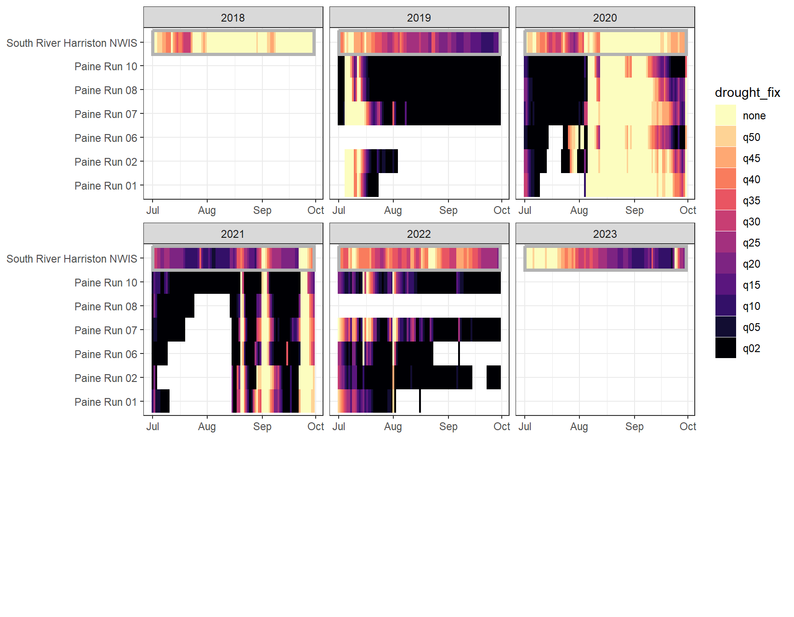
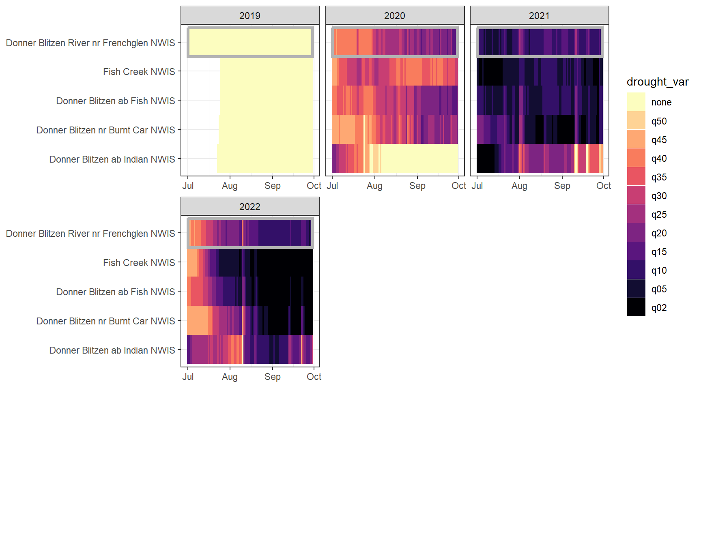
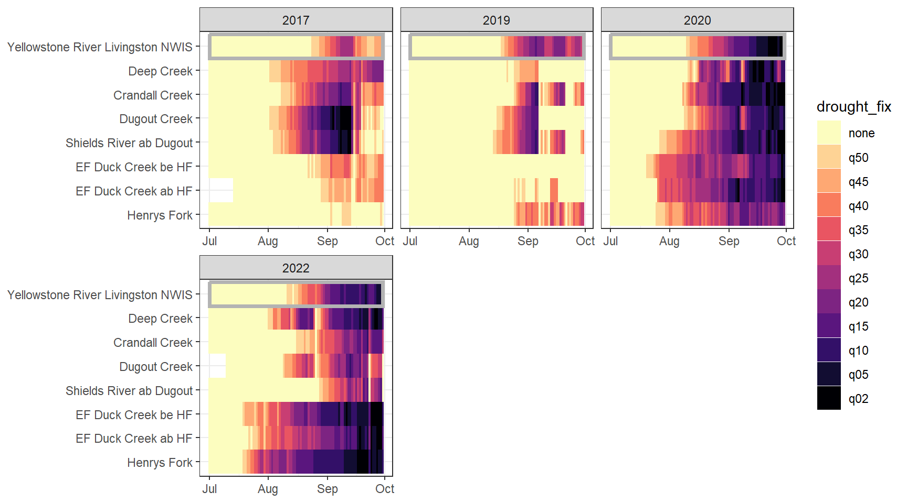
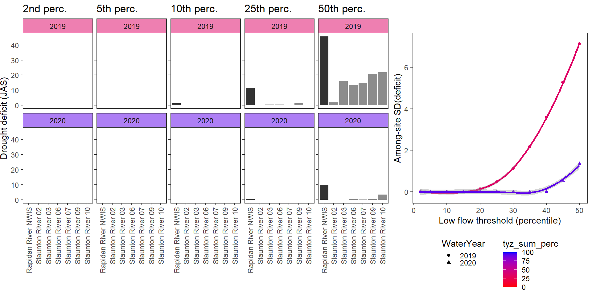
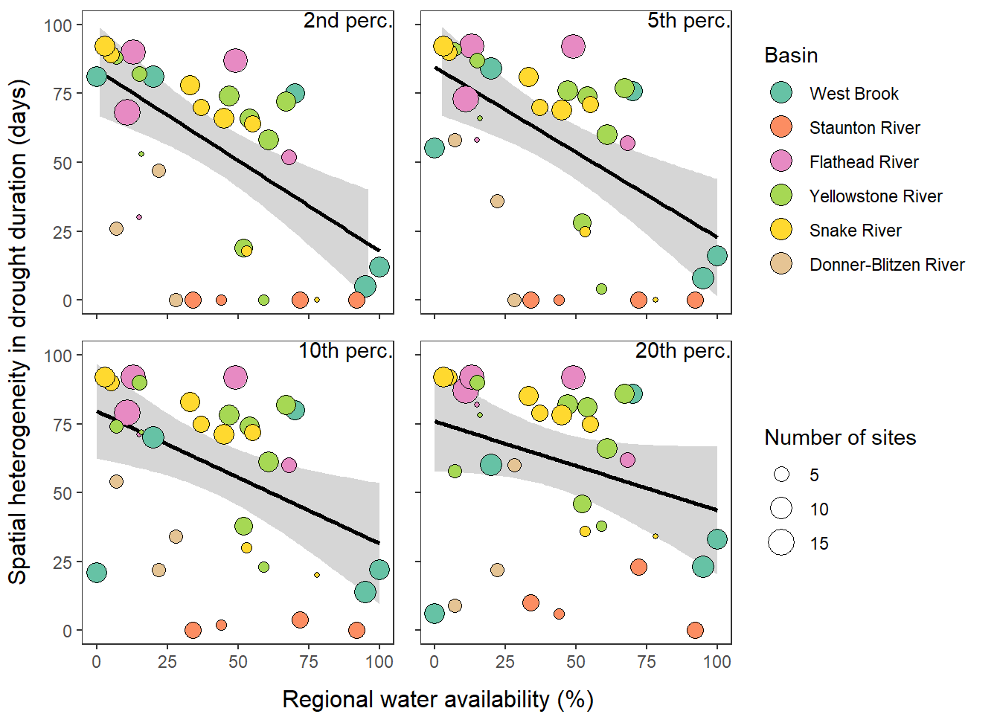
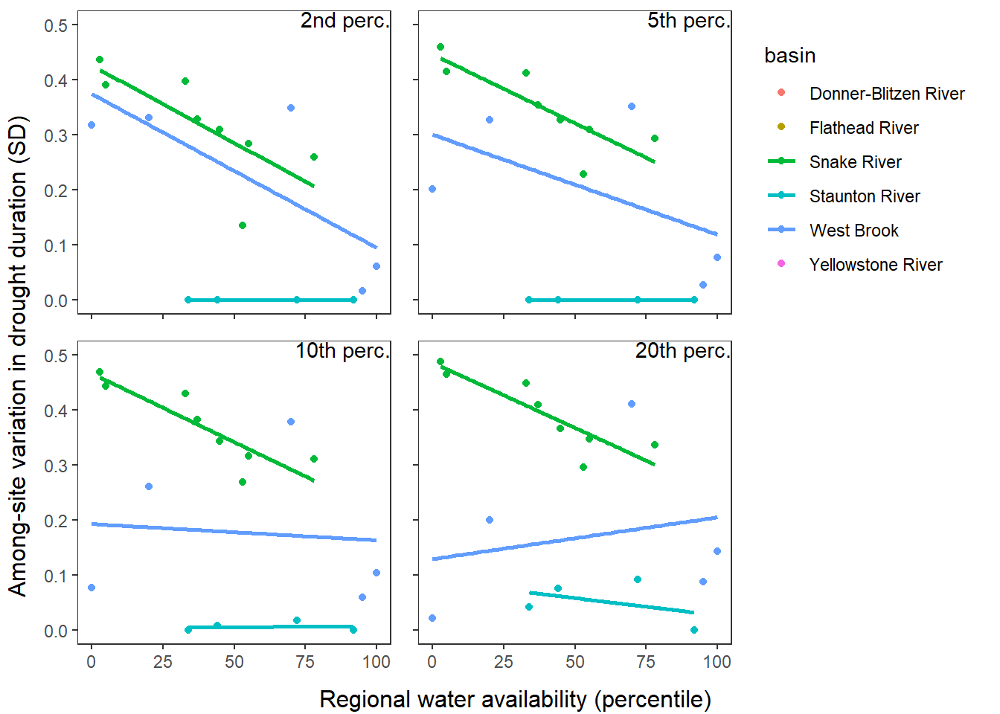
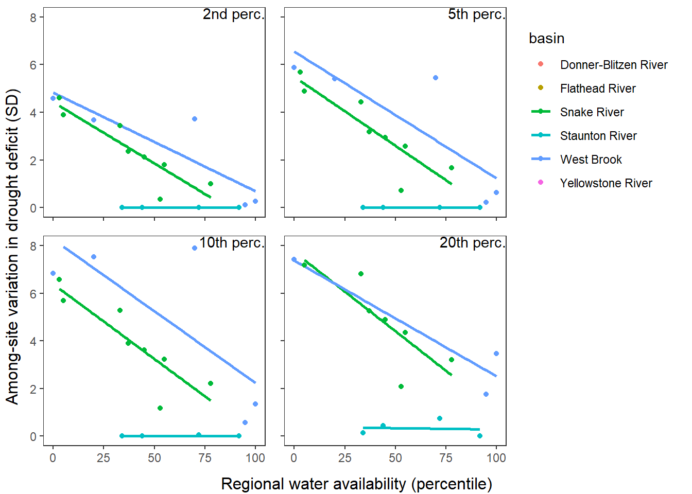
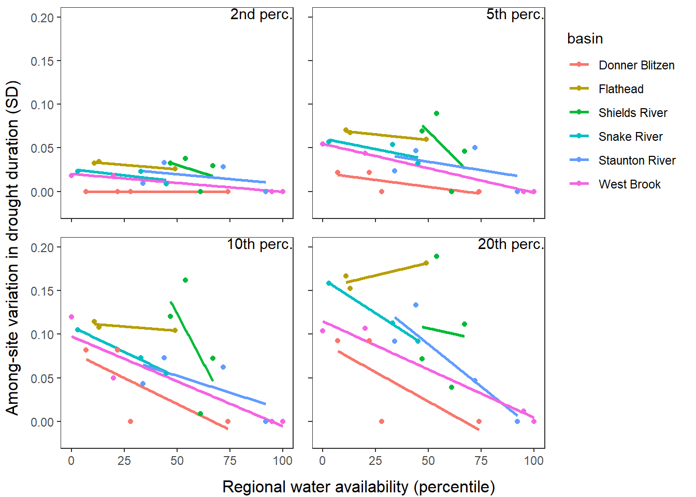

Code
siteinfo <- read_csv("C:/Users/jbaldock/OneDrive - DOI/Documents/USGS/EcoDrought/EcoDrought Working/Data/EcoDrought_SiteInformation.csv")
siteinfo_sp <- st_as_sf(siteinfo, coords = c("long", "lat"), crs = 4326)Purpose: Demonstrate spatial variation in drought-related low flow conditions across headwater stream networks.
Approach:
Site information
siteinfo <- read_csv("C:/Users/jbaldock/OneDrive - DOI/Documents/USGS/EcoDrought/EcoDrought Working/Data/EcoDrought_SiteInformation.csv")
siteinfo_sp <- st_as_sf(siteinfo, coords = c("long", "lat"), crs = 4326)Little g’s
dat_clean <- read_csv("C:/Users/jbaldock/OneDrive - DOI/Documents/USGS/EcoDrought/EcoDrought Working/EcoDrought-Analysis/Qualitative/LittleG_data_clean.csv")Big G’s
dat_clean_big <- read_csv("C:/Users/jbaldock/OneDrive - DOI/Documents/USGS/EcoDrought/EcoDrought Working/EcoDrought-Analysis/Qualitative/BigG_data_clean.csv")Climate
climdf <- read_csv("C:/Users/jbaldock/OneDrive - DOI/Documents/USGS/EcoDrought/EcoDrought Working/EcoDrought-Analysis/Qualitative/Daymet_climate.csv")
climdf_summ <- read_csv("C:/Users/jbaldock/OneDrive - DOI/Documents/USGS/EcoDrought/EcoDrought Working/EcoDrought-Analysis/Qualitative/Daymet_climate_summary.csv")Water availability
# wateravail <- read_csv("C:/Users/jbaldock/OneDrive - DOI/Documents/USGS/EcoDrought/EcoDrought Working/EcoDrought-Analysis/Qualitative/BigG_wateravailability_annual.csv")
wateravail <- read_csv("C:/Users/jbaldock/OneDrive - DOI/Documents/USGS/EcoDrought/EcoDrought Working/EcoDrought-Analysis/Qualitative/BigG_wateravailability_annual.csv") %>%
filter(!is.na(totalyield), !is.na(totalyield_sum)) %>%
group_by(site_name) %>%
mutate(tyz_perc = percentile(totalyield_z),
tyz_sum_perc = percentile(totalyield_sum_z)) %>%
mutate(tyz_perc = ifelse(is.na(tyz_perc), 0, tyz_perc),
tyz_sum_perc = ifelse(is.na(tyz_sum_perc), 0, tyz_sum_perc)) %>%
ungroup()# get range of years for little g data
daterange <- dat_clean %>% group_by(basin) %>% summarize(minyear = year(min(date)), maxyear = year(max(date)))
# spread ecod years
mylist <- vector("list", length = dim(daterange)[1])
for (i in 1:dim(daterange)[1]) {
mylist[[i]] <- tibble(basin = daterange$basin[i], WaterYear = seq(from = daterange$minyear[i], to = daterange$maxyear[i], by = 1))
}
yrdf <- do.call(rbind, mylist) %>% mutate(ecodyr = "yes")For colors, order sites from downstream to upstream (roughly) and by subbasin (if appropriate)
wborder <- c("West Brook NWIS", "West Brook Lower", "Mitchell Brook", "Jimmy Brook", "Obear Brook Lower", "West Brook Upper", "West Brook Reservoir", "Sanderson Brook", "Avery Brook", "West Whately Brook")
paineorder <- c("Paine Run 10", "Paine Run 08", "Paine Run 07", "Paine Run 06", "Paine Run 02", "Paine Run 01")
stauntorder <- c("Staunton River 10", "Staunton River 09", "Staunton River 07", "Staunton River 06", "Staunton River 03", "Staunton River 02")
flatorder <- c("BigCreekLower", "LangfordCreekLower", "LangfordCreekUpper", "Big Creek NWIS", "BigCreekUpper", "HallowattCreekLower", "NicolaCreek", "WernerCreek", "Hallowat Creek NWIS", "CoalCreekLower", "CycloneCreekLower", "CycloneCreekMiddle", "CycloneCreekUpper", "CoalCreekMiddle", "CoalCreekNorth", "CoalCreekHeadwaters", "McGeeCreekLower", "McGeeCreekTrib", "McGeeCreekUpper")
yellorder <- c("Shields River Valley Ranch", "Deep Creek", "Crandall Creek", "Buck Creek", "Dugout Creek", "Shields River ab Dugout", "Lodgepole Creek", "EF Duck Creek be HF", "EF Duck Creek ab HF", "Henrys Fork")
snakeorder <- c("Spread Creek Dam", "Rock Creek", "NF Spread Creek Lower", "NF Spread Creek Upper", "Grizzly Creek", "SF Spread Creek Lower", "Grouse Creek", "SF Spread Creek Upper", "Leidy Creek Mouth")
donnerorder <- c("Fish Creek NWIS", "Donner Blitzen ab Fish NWIS", "Donner Blitzen nr Burnt Car NWIS", "Donner Blitzen ab Indian NWIS")Generate fixed and time varying (by day of year) drought/low flow thresholds from long-term (1970-2025) big G streamflow data. Quantiles in ~0.05 increments from 0.02 to 0.50.
# calculate site-level fixed low flow thresholds
dat_clean_big_fixed <- dat_clean_big %>%
filter(!is.na(basin)) %>%
group_by(site_name, basin, subbasin, region) %>%
summarize(thresh_50_fix = quantile(Yield_mm, probs = 0.50, na.rm = TRUE),
thresh_45_fix = quantile(Yield_mm, probs = 0.45, na.rm = TRUE),
thresh_40_fix = quantile(Yield_mm, probs = 0.40, na.rm = TRUE),
thresh_35_fix = quantile(Yield_mm, probs = 0.35, na.rm = TRUE),
thresh_30_fix = quantile(Yield_mm, probs = 0.30, na.rm = TRUE),
thresh_25_fix = quantile(Yield_mm, probs = 0.25, na.rm = TRUE),
thresh_20_fix = quantile(Yield_mm, probs = 0.20, na.rm = TRUE),
thresh_15_fix = quantile(Yield_mm, probs = 0.15, na.rm = TRUE),
thresh_10_fix = quantile(Yield_mm, probs = 0.10, na.rm = TRUE),
thresh_05_fix = quantile(Yield_mm, probs = 0.05, na.rm = TRUE),
thresh_02_fix = quantile(Yield_mm, probs = 0.02, na.rm = TRUE)) %>%
ungroup()
(dat_clean_big_fixed)# A tibble: 8 × 15
site_name basin subbasin region thresh_50_fix thresh_45_fix thresh_40_fix
<chr> <chr> <chr> <chr> <dbl> <dbl> <dbl>
1 Battle Run NW… Pine… Piney R… Shen 0.586 0.513 0.439
2 Donner Blitze… Donn… Donner … Oreg 0.272 0.246 0.227
3 North Fork Fl… Flat… Flathead Flat 0.729 0.644 0.579
4 Pacific Creek… Snak… Snake R… Snake 0.364 0.336 0.313
5 Rapidan River… Stau… Staunto… Shen 0.830 0.731 0.642
6 South River C… West… West Br… Mass 1.34 1.18 1.02
7 South River H… Pain… Paine R… Shen 0.704 0.624 0.557
8 Yellowstone R… Shie… Shields… Shiel… 0.500 0.466 0.438
# ℹ 8 more variables: thresh_35_fix <dbl>, thresh_30_fix <dbl>,
# thresh_25_fix <dbl>, thresh_20_fix <dbl>, thresh_15_fix <dbl>,
# thresh_10_fix <dbl>, thresh_05_fix <dbl>, thresh_02_fix <dbl># calculate site-level variable (by doy) low flow thresholds
dat_clean_big_variable <- dat_clean_big %>%
filter(!is.na(basin)) %>%
group_by(site_name, basin, subbasin, region, doy_calendar) %>%
summarize(thresh_50_var = quantile(Yield_mm, probs = 0.50, na.rm = TRUE),
thresh_45_var = quantile(Yield_mm, probs = 0.45, na.rm = TRUE),
thresh_40_var = quantile(Yield_mm, probs = 0.40, na.rm = TRUE),
thresh_35_var = quantile(Yield_mm, probs = 0.35, na.rm = TRUE),
thresh_30_var = quantile(Yield_mm, probs = 0.30, na.rm = TRUE),
thresh_25_var = quantile(Yield_mm, probs = 0.25, na.rm = TRUE),
thresh_20_var = quantile(Yield_mm, probs = 0.20, na.rm = TRUE),
thresh_15_var = quantile(Yield_mm, probs = 0.15, na.rm = TRUE),
thresh_10_var = quantile(Yield_mm, probs = 0.10, na.rm = TRUE),
thresh_05_var = quantile(Yield_mm, probs = 0.05, na.rm = TRUE),
thresh_02_var = quantile(Yield_mm, probs = 0.02, na.rm = TRUE)) %>%
ungroup()
(dat_clean_big_variable)# A tibble: 2,928 × 16
site_name basin subbasin region doy_calendar thresh_50_var thresh_45_var
<chr> <chr> <chr> <chr> <dbl> <dbl> <dbl>
1 Battle Run NW… Pine… Piney R… Shen 1 0.732 0.687
2 Battle Run NW… Pine… Piney R… Shen 2 0.754 0.702
3 Battle Run NW… Pine… Piney R… Shen 3 0.815 0.727
4 Battle Run NW… Pine… Piney R… Shen 4 0.860 0.802
5 Battle Run NW… Pine… Piney R… Shen 5 0.805 0.732
6 Battle Run NW… Pine… Piney R… Shen 6 0.751 0.690
7 Battle Run NW… Pine… Piney R… Shen 7 0.859 0.790
8 Battle Run NW… Pine… Piney R… Shen 8 0.787 0.732
9 Battle Run NW… Pine… Piney R… Shen 9 0.805 0.784
10 Battle Run NW… Pine… Piney R… Shen 10 0.820 0.732
# ℹ 2,918 more rows
# ℹ 9 more variables: thresh_40_var <dbl>, thresh_35_var <dbl>,
# thresh_30_var <dbl>, thresh_25_var <dbl>, thresh_20_var <dbl>,
# thresh_15_var <dbl>, thresh_10_var <dbl>, thresh_05_var <dbl>,
# thresh_02_var <dbl>Join drought thresholds derived from big G to little g’s
mydroughtlevels <- c("none", "q50", "q45", "q40", "q35", "q30", "q25", "q20", "q15", "q10", "q05", "q02")
# little gs
dat_clean_little_join <- dat_clean %>%
left_join(dat_clean_big_fixed %>% select(-c(site_name, subbasin))) %>%
left_join(dat_clean_big_variable %>% select(-c(site_name, subbasin))) %>%
mutate(month = month(date),
year = year(date),
designation = "little",
drought_fix = ifelse(Yield_mm <= thresh_50_fix & Yield_mm > thresh_45_fix, "q50",
ifelse(Yield_mm <= thresh_45_fix & Yield_mm > thresh_40_fix, "q45",
ifelse(Yield_mm <= thresh_40_fix & Yield_mm > thresh_35_fix, "q40",
ifelse(Yield_mm <= thresh_35_fix & Yield_mm > thresh_30_fix, "q35",
ifelse(Yield_mm <= thresh_30_fix & Yield_mm > thresh_25_fix, "q30",
ifelse(Yield_mm <= thresh_25_fix & Yield_mm > thresh_20_fix, "q25",
ifelse(Yield_mm <= thresh_20_fix & Yield_mm > thresh_15_fix, "q20",
ifelse(Yield_mm <= thresh_15_fix & Yield_mm > thresh_10_fix, "q15",
ifelse(Yield_mm <= thresh_10_fix & Yield_mm > thresh_05_fix, "q10",
ifelse(Yield_mm <= thresh_05_fix & Yield_mm > thresh_02_fix, "q05",
ifelse(Yield_mm <= thresh_02_fix, "q02", "none"))))))))))),
drought_var = ifelse(Yield_mm <= thresh_50_var & Yield_mm > thresh_45_var, "q50",
ifelse(Yield_mm <= thresh_45_var & Yield_mm > thresh_40_var, "q45",
ifelse(Yield_mm <= thresh_40_var & Yield_mm > thresh_35_var, "q40",
ifelse(Yield_mm <= thresh_35_var & Yield_mm > thresh_30_var, "q35",
ifelse(Yield_mm <= thresh_30_var & Yield_mm > thresh_25_var, "q30",
ifelse(Yield_mm <= thresh_25_var & Yield_mm > thresh_20_var, "q25",
ifelse(Yield_mm <= thresh_20_var & Yield_mm > thresh_15_var, "q20",
ifelse(Yield_mm <= thresh_15_var & Yield_mm > thresh_10_var, "q15",
ifelse(Yield_mm <= thresh_10_var & Yield_mm > thresh_05_var, "q10",
ifelse(Yield_mm <= thresh_05_var & Yield_mm > thresh_02_var, "q05",
ifelse(Yield_mm <= thresh_02_var, "q02", "none")))))))))))) %>%
mutate(drought_fix = factor(ifelse(is.na(Yield_mm), NA, drought_fix), levels = mydroughtlevels),
drought_var = factor(ifelse(is.na(Yield_mm), NA, drought_var), levels = mydroughtlevels))
# big gs
dat_clean_big_join <- dat_clean_big %>%
left_join(dat_clean_big_fixed %>% select(-c(site_name, subbasin))) %>%
left_join(dat_clean_big_variable %>% select(-c(site_name, subbasin))) %>%
mutate(month = month(date),
year = year(date),
designation = "big",
drought_fix = ifelse(Yield_mm <= thresh_50_fix & Yield_mm > thresh_45_fix, "q50",
ifelse(Yield_mm <= thresh_45_fix & Yield_mm > thresh_40_fix, "q45",
ifelse(Yield_mm <= thresh_40_fix & Yield_mm > thresh_35_fix, "q40",
ifelse(Yield_mm <= thresh_35_fix & Yield_mm > thresh_30_fix, "q35",
ifelse(Yield_mm <= thresh_30_fix & Yield_mm > thresh_25_fix, "q30",
ifelse(Yield_mm <= thresh_25_fix & Yield_mm > thresh_20_fix, "q25",
ifelse(Yield_mm <= thresh_20_fix & Yield_mm > thresh_15_fix, "q20",
ifelse(Yield_mm <= thresh_15_fix & Yield_mm > thresh_10_fix, "q15",
ifelse(Yield_mm <= thresh_10_fix & Yield_mm > thresh_05_fix, "q10",
ifelse(Yield_mm <= thresh_05_fix & Yield_mm > thresh_02_fix, "q05",
ifelse(Yield_mm <= thresh_02_fix, "q02", "none"))))))))))),
drought_var = ifelse(Yield_mm <= thresh_50_var & Yield_mm > thresh_45_var, "q50",
ifelse(Yield_mm <= thresh_45_var & Yield_mm > thresh_40_var, "q45",
ifelse(Yield_mm <= thresh_40_var & Yield_mm > thresh_35_var, "q40",
ifelse(Yield_mm <= thresh_35_var & Yield_mm > thresh_30_var, "q35",
ifelse(Yield_mm <= thresh_30_var & Yield_mm > thresh_25_var, "q30",
ifelse(Yield_mm <= thresh_25_var & Yield_mm > thresh_20_var, "q25",
ifelse(Yield_mm <= thresh_20_var & Yield_mm > thresh_15_var, "q20",
ifelse(Yield_mm <= thresh_15_var & Yield_mm > thresh_10_var, "q15",
ifelse(Yield_mm <= thresh_10_var & Yield_mm > thresh_05_var, "q10",
ifelse(Yield_mm <= thresh_05_var & Yield_mm > thresh_02_var, "q05",
ifelse(Yield_mm <= thresh_02_var, "q02", "none")))))))))))) %>%
mutate(drought_fix = factor(ifelse(is.na(Yield_mm), NA, drought_fix), levels = mydroughtlevels),
drought_var = factor(ifelse(is.na(Yield_mm), NA, drought_var), levels = mydroughtlevels))
dat_clean_big_join_sub <- dat_clean_big_join %>% left_join(yrdf) %>% filter(ecodyr == "yes")
# join data
dat_clean_join <- bind_rows(dat_clean_little_join, dat_clean_big_join_sub)Drought/low flow delineation is somewhat complicated by the fact that some streams simply have greater yield than others. For example, at groundwater-dominated sites, the above approach will never detect low flow conditions based on big G thresholds, but this doesn’t mean that flow at that site isn’t lower than normal (for that site). This is most obvious in the Snake River basin, where NF Spread Creek Upper never experiences drought (because this is presumably a gaining reach) and Rock and Grouse Creeks are in a perpetual state of drought (presumable these are losing reaches). This is a classic “At which level of organization do I standardize my data?” question: are general differences in flow volume among sites signal or noise? But perhaps more importantly, this is a question of “what is drought?” Is drought relative to some larger regional metric (e.g., big G)? Or is it a local phenomenon, where the specifics of individual streams and reaches matter.
For each site individually, generate (fixed) drought/low flow thresholds using the same quantiles same as above: ~0.05 increments from 0.02 to 0.50. Restrict data to selected basins, sites, and years with (nearly) complete summer (July, August, September) data over the selected periods/locations. (Standardization needs to be done over comparable time periods, at least among sites within basins).
Require 95% data availability across all water years for site to be included!
Organize data, get site-level low flow threshold values, and denote drought periods
# Require 95% data availability!
monthss <- c(7:9)
# grab data and bind, z-score Yield
dat_clean_sub <- bind_rows(
dat_clean %>% filter(basin == "West Brook", WaterYear %in% c(2020:2023), Month %in% monthss, !site_name %in% c("Mitchell Brook", "West Brook Lower")) %>%
bind_rows(dat_clean_big %>% filter(basin == "West Brook", WaterYear %in% c(2020:2023), Month %in% monthss)),
dat_clean %>% filter(basin == "Staunton River", WaterYear %in% c(2019:2022), Month %in% monthss) %>%
bind_rows(dat_clean_big %>% filter(basin == "Staunton River", WaterYear %in% c(2019:2022), Month %in% monthss)),
dat_clean %>% filter(basin == "Flathead", WaterYear %in% c(2019:2021), Month %in% monthss, !site_name %in% c("BigCreekLower", "LangfordCreekUpper", "WernerCreek", "CycloneCreekMiddle", "CoalCreekMiddle", "McGeeCreekUpper")) %>%
bind_rows(dat_clean_big %>% filter(basin == "Flathead", WaterYear %in% c(2019:2021), Month %in% monthss)),
# dat_clean %>% filter(subbasin == "Big Creek", WaterYear %in% c(2019:2021), Month %in% monthss, !site_name %in% c("BigCreekLower", "LangfordCreekUpper", "NicolaCreek", "WernerCreek")) %>%
# bind_rows(dat_clean_big %>% filter(basin == "Flathead", WaterYear %in% c(2019:2021), Month %in% monthss) %>% mutate(subbasin = "Big Creek")),
#
# dat_clean %>% filter(subbasin == "Coal Creek", WaterYear %in% c(2019:2021), Month %in% monthss, !site_name %in% c("CycloneCreekMiddle", "CoalCreekMiddle", "CoalCreekHeadwaters")) %>%
# bind_rows(dat_clean_big %>% filter(basin == "Flathead", WaterYear %in% c(2019:2021), Month %in% monthss) %>% mutate(subbasin = "Coal Creek")),
dat_clean %>% filter(basin == "Snake River", WaterYear %in% c(2020:2022), Month %in% monthss, !site_name %in% c("Spread Creek Dam")) %>%
bind_rows(dat_clean_big %>% filter(basin == "Snake River", WaterYear %in% c(2020:2022), Month %in% monthss)),
dat_clean %>% filter(basin == "Shields River", WaterYear %in% c(2017, 2019, 2020, 2022), Month %in% monthss, !site_name %in% c("Shields River Valley Ranch", "Buck Creek", "Lodgepole Creek")) %>% group_by(site_name) %>%
bind_rows(dat_clean_big %>% filter(basin == "Shields River", WaterYear %in% c(2017, 2019, 2020, 2022), Month %in% monthss)),
# dat_clean %>% filter(subbasin == "Shields River", WaterYear %in% c(2019, 2020, 2023), Month %in% monthss, !site_name %in% c("Shields River Valley Ranch")) %>% group_by(site_name) %>%
# bind_rows(dat_clean_big %>% filter(basin == "Shields River", WaterYear %in% c(2019, 2020, 2023), Month %in% monthss)),
#
# dat_clean %>% filter(subbasin == "Duck Creek", WaterYear %in% c(2017:2022), Month %in% monthss) %>%
# bind_rows(dat_clean_big %>% filter(basin == "Shields River", WaterYear %in% c(2017:2022), Month %in% monthss) %>% mutate(subbasin = "Duck Creek")),
dat_clean %>% filter(basin == "Donner Blitzen", WaterYear %in% c(2019:2022), Month %in% monthss) %>%
bind_rows(dat_clean_big %>% filter(basin == "Donner Blitzen", WaterYear %in% c(2019:2022), Month %in% monthss))
) %>%
group_by(site_name) %>%
mutate(z_Yield_mm = scale(Yield_mm, center = TRUE, scale = TRUE)[,1]) %>%
ungroup()
# get low flow thresholds
dat_clean_sub_thresh <- dat_clean_sub %>%
group_by(site_name) %>%
summarize(thresh_50_fix = quantile(z_Yield_mm, probs = 0.50, na.rm = TRUE),
thresh_45_fix = quantile(z_Yield_mm, probs = 0.45, na.rm = TRUE),
thresh_40_fix = quantile(z_Yield_mm, probs = 0.40, na.rm = TRUE),
thresh_35_fix = quantile(z_Yield_mm, probs = 0.35, na.rm = TRUE),
thresh_30_fix = quantile(z_Yield_mm, probs = 0.30, na.rm = TRUE),
thresh_25_fix = quantile(z_Yield_mm, probs = 0.25, na.rm = TRUE),
thresh_20_fix = quantile(z_Yield_mm, probs = 0.20, na.rm = TRUE),
thresh_15_fix = quantile(z_Yield_mm, probs = 0.15, na.rm = TRUE),
thresh_10_fix = quantile(z_Yield_mm, probs = 0.10, na.rm = TRUE),
thresh_05_fix = quantile(z_Yield_mm, probs = 0.05, na.rm = TRUE),
thresh_02_fix = quantile(z_Yield_mm, probs = 0.02, na.rm = TRUE)) %>%
ungroup()
dat_clean_sub_thresh# A tibble: 52 × 12
site_name thresh_50_fix thresh_45_fix thresh_40_fix thresh_35_fix
<chr> <dbl> <dbl> <dbl> <dbl>
1 Avery Brook -0.263 -0.308 -0.336 -0.348
2 Big Creek NWIS -0.380 -0.421 -0.474 -0.532
3 BigCreekUpper -0.435 -0.488 -0.532 -0.576
4 CoalCreekHeadwaters -0.345 -0.359 -0.368 -0.379
5 CoalCreekLower -0.378 -0.443 -0.507 -0.553
6 CoalCreekNorth -0.349 -0.429 -0.488 -0.548
7 Crandall Creek -0.347 -0.465 -0.526 -0.588
8 CycloneCreekLower -0.225 -0.313 -0.405 -0.457
9 CycloneCreekUpper -0.504 -0.555 -0.596 -0.617
10 Deep Creek -0.340 -0.396 -0.441 -0.488
# ℹ 42 more rows
# ℹ 7 more variables: thresh_30_fix <dbl>, thresh_25_fix <dbl>,
# thresh_20_fix <dbl>, thresh_15_fix <dbl>, thresh_10_fix <dbl>,
# thresh_05_fix <dbl>, thresh_02_fix <dbl># join thresholds to data and denote drought periods
dat_clean_sub <- dat_clean_sub %>%
left_join(dat_clean_sub_thresh) %>%
mutate(month = month(date),
year = year(date),
drought_fix = ifelse(z_Yield_mm <= thresh_50_fix & z_Yield_mm > thresh_45_fix, "q50",
ifelse(z_Yield_mm <= thresh_45_fix & z_Yield_mm > thresh_40_fix, "q45",
ifelse(z_Yield_mm <= thresh_40_fix & z_Yield_mm > thresh_35_fix, "q40",
ifelse(z_Yield_mm <= thresh_35_fix & z_Yield_mm > thresh_30_fix, "q35",
ifelse(z_Yield_mm <= thresh_30_fix & z_Yield_mm > thresh_25_fix, "q30",
ifelse(z_Yield_mm <= thresh_25_fix & z_Yield_mm > thresh_20_fix, "q25",
ifelse(z_Yield_mm <= thresh_20_fix & z_Yield_mm > thresh_15_fix, "q20",
ifelse(z_Yield_mm <= thresh_15_fix & z_Yield_mm > thresh_10_fix, "q15",
ifelse(z_Yield_mm <= thresh_10_fix & z_Yield_mm > thresh_05_fix, "q10",
ifelse(z_Yield_mm <= thresh_05_fix & z_Yield_mm > thresh_02_fix, "q05",
ifelse(z_Yield_mm <= thresh_02_fix, "q02", "none")))))))))))) %>%
mutate(drought_fix = factor(ifelse(is.na(Yield_mm), NA, drought_fix), levels = mydroughtlevels))
dat_clean_sub# A tibble: 16,731 × 31
site_name basin subbasin region date flow_mean tempc_mean Yield_mm
<chr> <chr> <chr> <chr> <date> <dbl> <dbl> <dbl>
1 Avery Brook West Br… West Br… Mass 2020-07-01 1.34 16.0 0.446
2 Avery Brook West Br… West Br… Mass 2020-07-02 0.963 16.1 0.321
3 Avery Brook West Br… West Br… Mass 2020-07-03 2.40 17.3 0.800
4 Avery Brook West Br… West Br… Mass 2020-07-04 3.31 17.4 1.10
5 Avery Brook West Br… West Br… Mass 2020-07-05 1.38 17.5 0.460
6 Avery Brook West Br… West Br… Mass 2020-07-06 0.965 17.5 0.322
7 Avery Brook West Br… West Br… Mass 2020-07-07 0.778 17.3 0.259
8 Avery Brook West Br… West Br… Mass 2020-07-08 0.795 17.3 0.265
9 Avery Brook West Br… West Br… Mass 2020-07-09 1.07 17.9 0.356
10 Avery Brook West Br… West Br… Mass 2020-07-10 14.3 19.4 4.76
# ℹ 16,721 more rows
# ℹ 23 more variables: CalendarYear <dbl>, Month <dbl>, MonthName <chr>,
# WaterYear <dbl>, DayofYear <dbl>, logYield <dbl>, designation <chr>,
# doy_calendar <dbl>, z_Yield_mm <dbl>, thresh_50_fix <dbl>,
# thresh_45_fix <dbl>, thresh_40_fix <dbl>, thresh_35_fix <dbl>,
# thresh_30_fix <dbl>, thresh_25_fix <dbl>, thresh_20_fix <dbl>,
# thresh_15_fix <dbl>, thresh_10_fix <dbl>, thresh_05_fix <dbl>, …Create heatmap functions
# fixed drought threshold
heatmapfun_fix <- function(bas, months, bigG) {
dd <- dat_clean_join %>% filter(basin == bas | site_name == bigG, month %in% months)
mysites <- c(unique(unlist(dd %>% filter(designation == "big") %>% select(site_name))),
unique(unlist(dd %>% filter(designation == "little") %>% select(site_name))))
myrect <- dd %>% group_by(WaterYear) %>% summarize(mindate = min(date), maxdate = max(date)) %>% ungroup()
p <- dd %>%
ggplot() +
geom_tile(aes(x = date, y = factor(site_name, levels = rev(mysites)), fill = drought_fix)) +
scale_fill_viridis(option = "A", direction = -1, discrete = TRUE, limits = mydroughtlevels) +
geom_rect(data = myrect, aes(xmin = mindate, xmax = maxdate, ymin = length(mysites)-0.5, ymax = length(mysites)+0.5),
color = "grey70", fill = NA, size = 1.25) +
xlab("Date") + ylab("Site") +
#facet_wrap(~WaterYear, scales = "free_x") +
facet_wrap2(~WaterYear, scales = "free_x", nrow = 3, ncol = 3, trim_blank = FALSE) +
theme_bw() + theme(axis.title = element_blank())
return(p)
}
# variable drought threshold
heatmapfun_var <- function(bas, months, bigG) {
dd <- dat_clean_join %>% filter(basin == bas | site_name == bigG, month %in% months)
mysites <- c(unique(unlist(dd %>% filter(designation == "big") %>% select(site_name))),
unique(unlist(dd %>% filter(designation == "little") %>% select(site_name))))
myrect <- dd %>% group_by(WaterYear) %>% summarize(mindate = min(date), maxdate = max(date)) %>% ungroup()
p <- dd %>%
ggplot() +
geom_tile(aes(x = date, y = factor(site_name, levels = rev(mysites)), fill = drought_var)) +
scale_fill_viridis(option = "A", direction = -1, discrete = TRUE, limits = mydroughtlevels) +
geom_rect(data = myrect, aes(xmin = mindate, xmax = maxdate, ymin = length(mysites)-0.5, ymax = length(mysites)+0.5),
color = "grey70", fill = NA, size = 1.25) +
xlab("Date") + ylab("Site") +
#facet_wrap(~WaterYear, scales = "free_x") +
facet_wrap2(~WaterYear, scales = "free_x", nrow = 3, ncol = 3, trim_blank = FALSE) +
theme_bw() + theme(axis.title = element_blank())
return(p)
}
# site-level drought threshold
heatmapfun_site <- function(bas, months, bigG) {
dd <- dat_clean_sub %>% filter(basin == bas)
mysites <- c(unique(unlist(dd %>% filter(site_name != bigG) %>% select(site_name))), bigG)
myrect <- dd %>% group_by(WaterYear) %>% summarize(mindate = min(date), maxdate = max(date)) %>% ungroup()
p <- dd %>%
ggplot() +
geom_tile(aes(x = date, y = factor(site_name, levels = (mysites)), fill = drought_fix)) +
scale_fill_viridis(option = "A", direction = -1, discrete = TRUE, limits = mydroughtlevels) +
geom_rect(data = myrect, aes(xmin = mindate, xmax = maxdate, ymin = length(mysites)-0.5, ymax = length(mysites)+0.5),
color = "grey70", fill = NA, size = 1.25) +
xlab("Date") + ylab("Site") +
#facet_wrap(~WaterYear, scales = "free_x") +
facet_wrap2(~WaterYear, scales = "free_x", nrow = 2, ncol = 3, trim_blank = FALSE) +
theme_bw() + theme(axis.title = element_blank())
return(p)
}heatmapfun_fix(bas = "West Brook", bigG = "South River Conway NWIS", months = c(7:9))heatmapfun_fix(bas = "Paine Run", bigG = "South River Harriston NWIS", months = c(7:9))
heatmapfun_fix(bas = "Staunton River", bigG = "Rapidan River NWIS", months = c(7:9))
heatmapfun_fix(bas = "Flathead", bigG = "North Fork Flathead River NWIS", months = c(7:9))
heatmapfun_fix(bas = "Snake River", bigG = "Pacific Creek at Moran NWIS", months = c(7:9))
heatmapfun_fix(bas = "Shields River", bigG = "Yellowstone River Livingston NWIS", months = c(7:9))
heatmapfun_fix(bas = "Donner Blitzen", bigG = "Donner Blitzen River nr Frenchglen NWIS", months = c(7:9))
heatmapfun_var(bas = "West Brook", bigG = "South River Conway NWIS", months = c(7:9))
heatmapfun_var(bas = "Paine Run", bigG = "South River Harriston NWIS", months = c(7:9))
heatmapfun_var(bas = "Staunton River", bigG = "Rapidan River NWIS", months = c(7:9))
heatmapfun_var(bas = "Flathead", bigG = "North Fork Flathead River NWIS", months = c(7:9))
heatmapfun_var(bas = "Snake River", bigG = "Pacific Creek at Moran NWIS", months = c(7:9))
heatmapfun_var(bas = "Shields River", bigG = "Yellowstone River Livingston NWIS", months = c(7:9))
heatmapfun_var(bas = "Donner Blitzen", bigG = "Donner Blitzen River nr Frenchglen NWIS", months = c(7:9))
heatmapfun_site(bas = "West Brook", bigG = "South River Conway NWIS", months = c(7:9))
heatmapfun_site(bas = "Staunton River", bigG = "Rapidan River NWIS", months = c(7:9))
heatmapfun_site(bas = "Flathead", bigG = "North Fork Flathead River NWIS", months = c(7:9))
heatmapfun_site(bas = "Snake River", bigG = "Pacific Creek at Moran NWIS", months = c(7:9))
heatmapfun_site(bas = "Shields River", bigG = "Yellowstone River Livingston NWIS", months = c(7:9))
heatmapfun_site(bas = "Donner Blitzen", bigG = "Donner Blitzen River nr Frenchglen NWIS", months = c(7:9))
Calculate daily deficit, then summarize deficit magnitude and duration by site and month.
# calculate daily deficit
dat_clean_join_deficit <- dat_clean_join %>%
mutate(deficit_50_fix = ifelse(Yield_mm < thresh_50_fix, thresh_50_fix - Yield_mm, 0),
deficit_45_fix = ifelse(Yield_mm < thresh_45_fix, thresh_45_fix - Yield_mm, 0),
deficit_40_fix = ifelse(Yield_mm < thresh_40_fix, thresh_40_fix - Yield_mm, 0),
deficit_35_fix = ifelse(Yield_mm < thresh_35_fix, thresh_35_fix - Yield_mm, 0),
deficit_30_fix = ifelse(Yield_mm < thresh_30_fix, thresh_30_fix - Yield_mm, 0),
deficit_25_fix = ifelse(Yield_mm < thresh_25_fix, thresh_25_fix - Yield_mm, 0),
deficit_20_fix = ifelse(Yield_mm < thresh_20_fix, thresh_20_fix - Yield_mm, 0),
deficit_15_fix = ifelse(Yield_mm < thresh_15_fix, thresh_15_fix - Yield_mm, 0),
deficit_10_fix = ifelse(Yield_mm < thresh_10_fix, thresh_10_fix - Yield_mm, 0),
deficit_05_fix = ifelse(Yield_mm < thresh_05_fix, thresh_05_fix - Yield_mm, 0),
deficit_02_fix = ifelse(Yield_mm < thresh_02_fix, thresh_02_fix - Yield_mm, 0),
deficit_50_var = ifelse(Yield_mm < thresh_50_var, thresh_50_var - Yield_mm, 0),
deficit_45_var = ifelse(Yield_mm < thresh_45_var, thresh_45_var - Yield_mm, 0),
deficit_40_var = ifelse(Yield_mm < thresh_40_var, thresh_40_var - Yield_mm, 0),
deficit_35_var = ifelse(Yield_mm < thresh_35_var, thresh_35_var - Yield_mm, 0),
deficit_30_var = ifelse(Yield_mm < thresh_30_var, thresh_30_var - Yield_mm, 0),
deficit_25_var = ifelse(Yield_mm < thresh_25_var, thresh_25_var - Yield_mm, 0),
deficit_20_var = ifelse(Yield_mm < thresh_20_var, thresh_20_var - Yield_mm, 0),
deficit_15_var = ifelse(Yield_mm < thresh_15_var, thresh_15_var - Yield_mm, 0),
deficit_10_var = ifelse(Yield_mm < thresh_10_var, thresh_10_var - Yield_mm, 0),
deficit_05_var = ifelse(Yield_mm < thresh_05_var, thresh_05_var - Yield_mm, 0),
deficit_02_var = ifelse(Yield_mm < thresh_02_var, thresh_02_var - Yield_mm, 0))
# # fill missing dates
# dat_clean_join_deficit <- fill_missing_dates(dat_clean_join_deficit, dates = date, groups = site_name, pad_ends = TRUE)
#
# # fill ragged basin, subbasin, region, date variables
# dat_clean_join_deficit <- dat_clean_join_deficit %>%
# select(-c(basin, subbasin, region, CalendarYear, Month, MonthName, WaterYear, DayofYear, designation)) %>%
# left_join(siteinfo %>%
# mutate(designation = ifelse(site_name %in% unique(dat_clean_big$site_name), "big", "little")) %>%
# select(site_name, basin, subbasin, region, designation))
# dat_clean_join_deficit <- add_date_variables(dat_clean_join_deficit, dates = date, water_year_start = 10)
#
# # summarize by month
# defdur_month <- dat_clean_join_deficit %>%
# group_by(site_name, basin, subbasin, region, designation, CalendarYear, Month, MonthName, WaterYear) %>%
# summarize(ndays = n(),
# duration_50_fix = sum(deficit_50_fix > 0),
# duration_45_fix = sum(deficit_45_fix > 0),
# duration_40_fix = sum(deficit_40_fix > 0),
# duration_35_fix = sum(deficit_35_fix > 0),
# duration_30_fix = sum(deficit_30_fix > 0),
# duration_25_fix = sum(deficit_25_fix > 0),
# duration_20_fix = sum(deficit_20_fix > 0),
# duration_15_fix = sum(deficit_15_fix > 0),
# duration_10_fix = sum(deficit_10_fix > 0),
# duration_05_fix = sum(deficit_05_fix > 0),
# duration_02_fix = sum(deficit_02_fix > 0),
#
# duration_50_var = sum(deficit_50_var > 0),
# duration_45_var = sum(deficit_45_var > 0),
# duration_40_var = sum(deficit_40_var > 0),
# duration_35_var = sum(deficit_35_var > 0),
# duration_30_var = sum(deficit_30_var > 0),
# duration_25_var = sum(deficit_25_var > 0),
# duration_20_var = sum(deficit_20_var > 0),
# duration_15_var = sum(deficit_15_var > 0),
# duration_10_var = sum(deficit_10_var > 0),
# duration_05_var = sum(deficit_05_var > 0),
# duration_02_var = sum(deficit_02_var > 0),
#
# deficit_50_fix = sum(deficit_50_fix),
# deficit_45_fix = sum(deficit_45_fix),
# deficit_40_fix = sum(deficit_40_fix),
# deficit_35_fix = sum(deficit_35_fix),
# deficit_30_fix = sum(deficit_30_fix),
# deficit_25_fix = sum(deficit_25_fix),
# deficit_20_fix = sum(deficit_20_fix),
# deficit_15_fix = sum(deficit_15_fix),
# deficit_10_fix = sum(deficit_10_fix),
# deficit_05_fix = sum(deficit_05_fix),
# deficit_02_fix = sum(deficit_02_fix),
#
# deficit_50_var = sum(deficit_50_var),
# deficit_45_var = sum(deficit_45_var),
# deficit_40_var = sum(deficit_40_var),
# deficit_35_var = sum(deficit_35_var),
# deficit_30_var = sum(deficit_30_var),
# deficit_25_var = sum(deficit_25_var),
# deficit_20_var = sum(deficit_20_var),
# deficit_15_var = sum(deficit_15_var),
# deficit_10_var = sum(deficit_10_var),
# deficit_05_var = sum(deficit_05_var),
# deficit_02_var = sum(deficit_02_var)) %>%
# ungroup() %>%
# left_join(wateravail %>% select(basin, WaterYear, totalyield, totalyield_z))
# summarize by summer
defdur_ssn <- dat_clean_join_deficit %>%
filter(!is.na(Yield_mm), Month %in% c(7:9)) %>%
group_by(site_name, basin, subbasin, region, designation, CalendarYear, WaterYear) %>%
summarize(ndays = n(),
propdays = ndays/(31+31+30),
duration_50_fix_prop = sum(deficit_50_fix > 0) / ndays,
duration_45_fix_prop = sum(deficit_45_fix > 0) / ndays,
duration_40_fix_prop = sum(deficit_40_fix > 0) / ndays,
duration_35_fix_prop = sum(deficit_35_fix > 0) / ndays,
duration_30_fix_prop = sum(deficit_30_fix > 0) / ndays,
duration_25_fix_prop = sum(deficit_25_fix > 0) / ndays,
duration_20_fix_prop = sum(deficit_20_fix > 0) / ndays,
duration_15_fix_prop = sum(deficit_15_fix > 0) / ndays,
duration_10_fix_prop = sum(deficit_10_fix > 0) / ndays,
duration_05_fix_prop = sum(deficit_05_fix > 0) / ndays,
duration_02_fix_prop = sum(deficit_02_fix > 0) / ndays,
duration_50_var_prop = sum(deficit_50_var > 0) / ndays,
duration_45_var_prop = sum(deficit_45_var > 0) / ndays,
duration_40_var_prop = sum(deficit_40_var > 0) / ndays,
duration_35_var_prop = sum(deficit_35_var > 0) / ndays,
duration_30_var_prop = sum(deficit_30_var > 0) / ndays,
duration_25_var_prop = sum(deficit_25_var > 0) / ndays,
duration_20_var_prop = sum(deficit_20_var > 0) / ndays,
duration_15_var_prop = sum(deficit_15_var > 0) / ndays,
duration_10_var_prop = sum(deficit_10_var > 0) / ndays,
duration_05_var_prop = sum(deficit_05_var > 0) / ndays,
duration_02_var_prop = sum(deficit_02_var > 0) / ndays,
deficit_50_fix = sum(deficit_50_fix),
deficit_45_fix = sum(deficit_45_fix),
deficit_40_fix = sum(deficit_40_fix),
deficit_35_fix = sum(deficit_35_fix),
deficit_30_fix = sum(deficit_30_fix),
deficit_25_fix = sum(deficit_25_fix),
deficit_20_fix = sum(deficit_20_fix),
deficit_15_fix = sum(deficit_15_fix),
deficit_10_fix = sum(deficit_10_fix),
deficit_05_fix = sum(deficit_05_fix),
deficit_02_fix = sum(deficit_02_fix),
deficit_50_var = sum(deficit_50_var),
deficit_45_var = sum(deficit_45_var),
deficit_40_var = sum(deficit_40_var),
deficit_35_var = sum(deficit_35_var),
deficit_30_var = sum(deficit_30_var),
deficit_25_var = sum(deficit_25_var),
deficit_20_var = sum(deficit_20_var),
deficit_15_var = sum(deficit_15_var),
deficit_10_var = sum(deficit_10_var),
deficit_05_var = sum(deficit_05_var),
deficit_02_var = sum(deficit_02_var)) %>%
ungroup() %>%
filter(propdays >= 0.70) %>%
left_join(wateravail %>% select(basin, WaterYear, totalyield, totalyield_z))Create plotting functions
durationplotfun <- function(bas, bigG, months, wateryears, dropsites = NA) {
# filter and summarize data
# dd <- defdur_month %>%
# filter(subbasin == subbas | site_name == bigG, Month %in% months, WaterYear %in% wateryears, !site_name %in% dropsites) %>%
# mutate(WaterYear = factor(WaterYear, levels = wateryears)) %>%
# group_by(site_name, designation, WaterYear, totalyield_z) %>%
# summarize(duration_50_fix_prop = sum(duration_50_fix) / sum(ndays),
# duration_45_fix_prop = sum(duration_45_fix) / sum(ndays),
# duration_40_fix_prop = sum(duration_40_fix) / sum(ndays),
# duration_35_fix_prop = sum(duration_35_fix) / sum(ndays),
# duration_30_fix_prop = sum(duration_30_fix) / sum(ndays),
# duration_25_fix_prop = sum(duration_25_fix) / sum(ndays),
# duration_20_fix_prop = sum(duration_20_fix) / sum(ndays),
# duration_15_fix_prop = sum(duration_15_fix) / sum(ndays),
# duration_10_fix_prop = sum(duration_10_fix) / sum(ndays),
# duration_05_fix_prop = sum(duration_05_fix) / sum(ndays),
# duration_02_fix_prop = sum(duration_02_fix) / sum(ndays)) %>%
# ungroup()
dd <- defdur_ssn %>%
filter(basin == bas | site_name == bigG, WaterYear %in% wateryears, !site_name %in% dropsites) %>%
mutate(WaterYear = factor(WaterYear, levels = wateryears))
# order sites, Big G first
mysites <- c(unique(unlist(dd %>% filter(designation == "big") %>% select(site_name))),
unique(unlist(dd %>% filter(designation == "little") %>% select(site_name))))
# among site StDev ~ percentile
p_sds <- dd %>%
gather(duration_50_fix_prop:duration_02_fix_prop, key = "metric", value = "duration") %>%
mutate(quant = as.numeric(gsub(".*?([0-9]+).*", "\\1", metric)) ) %>%
filter(designation == "little") %>%
group_by(WaterYear, totalyield_z, metric, quant) %>%
summarize(sddur = sd(duration, na.rm = TRUE)) %>%
ungroup() %>%
#left_join(dd %>% filter(site_name == bigG) %>% select(WaterYear, duration_50_fix_prop) %>% rename(dur50 = duration_50_fix_prop)) %>%
left_join(wateravail %>% filter(site_name == bigG) %>% select(WaterYear, tyz_sum_perc) %>% mutate(WaterYear = as.factor(WaterYear))) %>%
ggplot(aes(x = quant, y = sddur, color = tyz_sum_perc, group = WaterYear, shape = WaterYear)) +
geom_point() +
scale_color_gradient(low = "red", high = "blue", limits = c(0,100)) +
stat_smooth() +
xlab("Low flow threshold (percentile)") + ylab("Among-site SD(duration)") +
theme_bw() +
theme(panel.grid.major = element_blank(), panel.grid.minor = element_blank(),
legend.position = "bottom", legend.direction = "vertical", legend.key.height = unit(0.3, 'cm'))
# barplot 50th perc
p30 <- dd %>%
ggplot(aes(x = factor(site_name, levels = (mysites)), y = duration_50_fix_prop)) +
geom_bar(aes(fill = designation), stat = "identity") +
scale_fill_manual(values = c("grey20", "grey55")) +
facet_wrap2(~WaterYear, ncol = 1, strip = strip_themed(background_x = elem_list_rect(fill = alpha(unique(layer_data(p_sds)[,1]), 0.5)))) +
ylim(0,1) +
ylab("Days below low flow threshold (%JAS)") + ggtitle("50th perc.") +
theme_bw() +
theme(axis.text.x = element_text(angle = 90, vjust = 0.5, hjust = 1),
legend.position = "none", axis.title.x = element_blank(),
panel.grid.major = element_blank(), panel.grid.minor = element_blank())
# barplot 25th perc.
p20 <- dd %>%
ggplot(aes(x = factor(site_name, levels = (mysites)), y = duration_25_fix_prop)) +
geom_bar(aes(fill = designation), stat = "identity") +
scale_fill_manual(values = c("grey20", "grey55")) +
facet_wrap2(~WaterYear, ncol = 1, strip = strip_themed(background_x = elem_list_rect(fill = alpha(unique(layer_data(p_sds)[,1]), 0.5)))) +
ylim(0,1) +
ylab("Days below low flow threshold (%JAS)") + ggtitle("25th perc.") +
theme_bw() +
theme(axis.text.x = element_text(angle = 90, vjust = 0.5, hjust = 1),
legend.position = "none", axis.title.x = element_blank(),
panel.grid.major = element_blank(), panel.grid.minor = element_blank())
# barplot 10th perc.
p10 <- dd %>%
ggplot(aes(x = factor(site_name, levels = (mysites)), y = duration_10_fix_prop)) +
geom_bar(aes(fill = designation), stat = "identity") +
scale_fill_manual(values = c("grey20", "grey55")) +
facet_wrap2(~WaterYear, ncol = 1, strip = strip_themed(background_x = elem_list_rect(fill = alpha(unique(layer_data(p_sds)[,1]), 0.5)))) +
ylim(0,1) +
ylab("Days below low flow threshold (%JAS)") + ggtitle("10th perc.") +
theme_bw() +
theme(axis.text.x = element_text(angle = 90, vjust = 0.5, hjust = 1),
legend.position = "none", axis.title.x = element_blank(),
panel.grid.major = element_blank(), panel.grid.minor = element_blank())
# barplot 5th perc.
p05 <- dd %>%
ggplot(aes(x = factor(site_name, levels = (mysites)), y = duration_05_fix_prop)) +
geom_bar(aes(fill = designation), stat = "identity") +
scale_fill_manual(values = c("grey20", "grey55")) +
facet_wrap2(~WaterYear, ncol = 1, strip = strip_themed(background_x = elem_list_rect(fill = alpha(unique(layer_data(p_sds)[,1]), 0.5)))) +
ylim(0,1) +
ylab("Days below low flow threshold (%JAS)") + ggtitle("5th perc.") +
theme_bw() +
theme(axis.text.x = element_text(angle = 90, vjust = 0.5, hjust = 1),
legend.position = "none", axis.title.x = element_blank(),
panel.grid.major = element_blank(), panel.grid.minor = element_blank())
# barplot 2nd perc
p02 <- dd %>%
ggplot(aes(x = factor(site_name, levels = (mysites)), y = duration_02_fix_prop)) +
geom_bar(aes(fill = designation), stat = "identity") +
scale_fill_manual(values = c("grey20", "grey55")) +
facet_wrap2(~WaterYear, ncol = 1, strip = strip_themed(background_x = elem_list_rect(fill = alpha(unique(layer_data(p_sds)[,1]), 0.5)))) +
ylim(0,1) +
ylab("Days below low flow threshold (%JAS)") + ggtitle("2nd perc.") +
theme_bw() +
theme(axis.text.x = element_text(angle = 90, vjust = 0.5, hjust = 1),
legend.position = "none", axis.title.x = element_blank(),
panel.grid.major = element_blank(), panel.grid.minor = element_blank())
# arrange plots
egg::ggarrange(p02 + theme(plot.margin = margin(r = 1, t = 5, b = 5)),
p05 + theme(axis.text.y = element_blank(), axis.title.y = element_blank(), plot.margin = margin(r = 1, l = 1)),
p10 + theme(axis.text.y = element_blank(), axis.title.y = element_blank(), plot.margin = margin(r = 1, l = 1)),
p20 + theme(axis.text.y = element_blank(), axis.title.y = element_blank(), plot.margin = margin(r = 1, l = 1)),
p30 + theme(axis.text.y = element_blank(), axis.title.y = element_blank(), plot.margin = margin(r = 1, l = 1)),
p_sds,
nrow = 1, widths = c(1,1,1,1,1,2.5))
}
deficitplotfun <- function(bas, bigG, months, wateryears, dropsites = NA) {
# filter and summarize data
# dd <- defdur_month %>%
# filter(subbasin == subbas | site_name == bigG, Month %in% months, WaterYear %in% wateryears, !site_name %in% dropsites) %>%
# mutate(WaterYear = factor(WaterYear, levels = wateryears)) %>%
# group_by(site_name, designation, WaterYear, totalyield_z) %>%
# summarize(deficit_50_fix = sum(deficit_50_fix),
# deficit_45_fix = sum(deficit_45_fix),
# deficit_40_fix = sum(deficit_40_fix),
# deficit_35_fix = sum(deficit_35_fix),
# deficit_30_fix = sum(deficit_30_fix),
# deficit_25_fix = sum(deficit_25_fix),
# deficit_20_fix = sum(deficit_20_fix),
# deficit_15_fix = sum(deficit_15_fix),
# deficit_10_fix = sum(deficit_10_fix),
# deficit_05_fix = sum(deficit_05_fix),
# deficit_02_fix = sum(deficit_02_fix)) %>%
# ungroup()
dd_all <- defdur_ssn %>% filter(basin == bas | site_name == bigG, WaterYear %in% wateryears, !site_name %in% dropsites)
dd <- defdur_ssn %>%
filter(basin == bas | site_name == bigG, WaterYear %in% wateryears, !site_name %in% dropsites) %>%
mutate(WaterYear = factor(WaterYear, levels = wateryears))
# get y-axis limit
ymax <- max(dd %>% select(deficit_50_fix:deficit_02_fix))
# order sites, Big G first
mysites <- c(unique(unlist(dd %>% filter(designation == "big") %>% select(site_name))),
unique(unlist(dd %>% filter(designation == "little") %>% select(site_name))))
# among site StDev ~ percentile
p_sds <- dd %>%
gather(deficit_50_fix:deficit_02_fix, key = "metric", value = "deficit") %>%
mutate(quant = as.numeric(gsub(".*?([0-9]+).*", "\\1", metric)) ) %>%
filter(designation == "little") %>%
group_by(WaterYear, totalyield_z, metric, quant) %>%
summarize(sddur = sd(deficit, na.rm = TRUE)) %>%
ungroup() %>%
#left_join(dd %>% filter(site_name == bigG) %>% select(WaterYear, deficit_50_fix) %>% rename(def50 = deficit_50_fix)) %>%
left_join(wateravail %>% filter(site_name == bigG) %>% select(WaterYear, tyz_sum_perc) %>% mutate(WaterYear = as.factor(WaterYear))) %>%
ggplot(aes(x = quant, y = sddur, color = tyz_sum_perc, group = WaterYear, shape = WaterYear)) +
geom_point() +
scale_color_gradient(low = "red", high = "blue", limits = c(0,100)) +
stat_smooth() +
xlab("Low flow threshold (percentile)") + ylab("Among-site SD(deficit)") +
theme_bw() +
theme(panel.grid.major = element_blank(), panel.grid.minor = element_blank(),
legend.position = "bottom", legend.direction = "vertical", legend.key.height = unit(0.3, 'cm'))
# barplot 50th perc
p30 <- dd %>%
ggplot(aes(x = factor(site_name, levels = (mysites)), y = deficit_50_fix)) +
geom_bar(aes(fill = designation), stat = "identity") +
scale_fill_manual(values = c("grey20", "grey55")) +
facet_wrap2(~WaterYear, ncol = 1, strip = strip_themed(background_x = elem_list_rect(fill = alpha(unique(layer_data(p_sds)[,1]), 0.5)))) +
ylim(0,ymax) +
ylab("Drought deficit (mm, JAS)") + ggtitle("50th perc.") +
theme_bw() +
theme(axis.text.x = element_text(angle = 90, vjust = 0.5, hjust = 1),
legend.position = "none", axis.title.x = element_blank(),
panel.grid.major = element_blank(), panel.grid.minor = element_blank())
# barplot 25th perc.
p20 <- dd %>%
ggplot(aes(x = factor(site_name, levels = (mysites)), y = deficit_25_fix)) +
geom_bar(aes(fill = designation), stat = "identity") +
scale_fill_manual(values = c("grey20", "grey55")) +
facet_wrap2(~WaterYear, ncol = 1, strip = strip_themed(background_x = elem_list_rect(fill = alpha(unique(layer_data(p_sds)[,1]), 0.5)))) +
ylim(0,ymax) +
ylab("Drought deficit (mm, JAS)") + ggtitle("25th perc.") +
theme_bw() +
theme(axis.text.x = element_text(angle = 90, vjust = 0.5, hjust = 1),
legend.position = "none", axis.title.x = element_blank(),
panel.grid.major = element_blank(), panel.grid.minor = element_blank())
# barplot 10th perc.
p10 <- dd %>%
ggplot(aes(x = factor(site_name, levels = (mysites)), y = deficit_10_fix)) +
geom_bar(aes(fill = designation), stat = "identity") +
scale_fill_manual(values = c("grey20", "grey55")) +
facet_wrap2(~WaterYear, ncol = 1, strip = strip_themed(background_x = elem_list_rect(fill = alpha(unique(layer_data(p_sds)[,1]), 0.5)))) +
ylim(0,ymax) +
ylab("Drought deficit (mm, JAS)") + ggtitle("10th perc.") +
theme_bw() +
theme(axis.text.x = element_text(angle = 90, vjust = 0.5, hjust = 1),
legend.position = "none", axis.title.x = element_blank(),
panel.grid.major = element_blank(), panel.grid.minor = element_blank())
# barplot 5th perc.
p05 <- dd %>%
ggplot(aes(x = factor(site_name, levels = (mysites)), y = deficit_05_fix)) +
geom_bar(aes(fill = designation), stat = "identity") +
scale_fill_manual(values = c("grey20", "grey55")) +
facet_wrap2(~WaterYear, ncol = 1, strip = strip_themed(background_x = elem_list_rect(fill = alpha(unique(layer_data(p_sds)[,1]), 0.5)))) +
ylim(0,ymax) +
ylab("Drought deficit (mm, JAS)") + ggtitle("5th perc.") +
theme_bw() +
theme(axis.text.x = element_text(angle = 90, vjust = 0.5, hjust = 1),
legend.position = "none", axis.title.x = element_blank(),
panel.grid.major = element_blank(), panel.grid.minor = element_blank())
# barplot 2nd perc
p02 <- dd %>%
ggplot(aes(x = factor(site_name, levels = (mysites)), y = deficit_02_fix)) +
geom_bar(aes(fill = designation), stat = "identity") +
scale_fill_manual(values = c("grey20", "grey55")) +
facet_wrap2(~WaterYear, ncol = 1, strip = strip_themed(background_x = elem_list_rect(fill = alpha(unique(layer_data(p_sds)[,1]), 0.5)))) +
ylim(0,ymax) +
ylab("Drought deficit (JAS)") + ggtitle("2nd perc.") +
theme_bw() +
theme(axis.text.x = element_text(angle = 90, vjust = 0.5, hjust = 1),
legend.position = "none", axis.title.x = element_blank(),
panel.grid.major = element_blank(), panel.grid.minor = element_blank())
# arrange plots
egg::ggarrange(p02 + theme(plot.margin = margin(r = 1, t = 5, b = 5)),
p05 + theme(axis.text.y = element_blank(), axis.title.y = element_blank(), plot.margin = margin(r = 1, l = 1)),
p10 + theme(axis.text.y = element_blank(), axis.title.y = element_blank(), plot.margin = margin(r = 1, l = 1)),
p20 + theme(axis.text.y = element_blank(), axis.title.y = element_blank(), plot.margin = margin(r = 1, l = 1)),
p30 + theme(axis.text.y = element_blank(), axis.title.y = element_blank(), plot.margin = margin(r = 1, l = 1)),
p_sds,
nrow = 1, widths = c(1,1,1,1,1,2.5))
}Show proportion of days (July - September) below different low flow thresholds (derived from long-term Big G data) for each site during a relatively wet year and a dry year. Then, for each year, plot the relationship between the among site (little g’s only) standard deviation of low flow duration and the low flow threshold used to calculate duration
durationplotfun(bas = "West Brook", bigG = "South River Conway NWIS", months = c(7:9), wateryears = c(2020, 2021))
durationplotfun(bas = "Staunton River", bigG = "Rapidan River NWIS", months = c(7:9), wateryears = c(2019, 2020))
durationplotfun(bas = "Flathead", bigG = "North Fork Flathead River NWIS", months = c(7:9), wateryears = c(2020, 2021), dropsites = c("BigCreekLower", "LangfordCreekUpper", "WernerCreek", "CycloneCreekMiddle", "CoalCreekMiddle", "McGeeCreekUpper"))
durationplotfun(bas = "Snake River", bigG = "Pacific Creek at Moran NWIS", months = c(7:9), wateryears = c(2021, 2022))
durationplotfun(bas = "Shields River", bigG = "Yellowstone River Livingston NWIS", months = c(7:9), wateryears = c(2020, 2019), dropsites = c("Shields River Valley Ranch", "Buck Creek", "Lodgepole Creek"))
durationplotfun(bas = "Donner Blitzen", bigG = "Donner Blitzen River nr Frenchglen NWIS", months = c(7:9), wateryears = c(2022, 2020))
Show total drought deficit (mm) relative to different low flow thresholds (derived from long-term Big G data) for each site during a relatively wet year and a dry year. Then, for each year, plot the relationship between the among site (little g’s only) standard deviation of deficit and the low flow threshold used to calculate deficit
deficitplotfun(bas = "West Brook", bigG = "South River Conway NWIS", months = c(7:9), wateryears = c(2020, 2021))
deficitplotfun(bas = "Staunton River", bigG = "Rapidan River NWIS", months = c(7:9), wateryears = c(2019, 2020))
deficitplotfun(bas = "Flathead", bigG = "North Fork Flathead River NWIS", months = c(7:9), wateryears = c(2020, 2021), dropsites = c("BigCreekLower", "LangfordCreekUpper", "WernerCreek", "CycloneCreekMiddle", "CoalCreekMiddle", "McGeeCreekUpper"))deficitplotfun(bas = "Snake River", bigG = "Pacific Creek at Moran NWIS", months = c(7:9), wateryears = c(2021, 2022))
deficitplotfun(bas = "Shields River", bigG = "Yellowstone River Livingston NWIS", months = c(7:9), wateryears = c(2020, 2019), dropsites = c("Shields River Valley Ranch", "Buck Creek", "Lodgepole Creek"))
deficitplotfun(bas = "Donner Blitzen", bigG = "Donner Blitzen River nr Frenchglen NWIS", months = c(7:9), wateryears = c(2022, 2020))
Organize data
dat_clean_sub_deficit <- dat_clean_sub %>%
mutate(deficit_50_fix = ifelse(z_Yield_mm < thresh_50_fix, abs(thresh_50_fix - z_Yield_mm), 0),
deficit_45_fix = ifelse(z_Yield_mm < thresh_45_fix, abs(thresh_45_fix - z_Yield_mm), 0),
deficit_40_fix = ifelse(z_Yield_mm < thresh_40_fix, abs(thresh_40_fix - z_Yield_mm), 0),
deficit_35_fix = ifelse(z_Yield_mm < thresh_35_fix, abs(thresh_35_fix - z_Yield_mm), 0),
deficit_30_fix = ifelse(z_Yield_mm < thresh_30_fix, abs(thresh_30_fix - z_Yield_mm), 0),
deficit_25_fix = ifelse(z_Yield_mm < thresh_25_fix, abs(thresh_25_fix - z_Yield_mm), 0),
deficit_20_fix = ifelse(z_Yield_mm < thresh_20_fix, abs(thresh_20_fix - z_Yield_mm), 0),
deficit_15_fix = ifelse(z_Yield_mm < thresh_15_fix, abs(thresh_15_fix - z_Yield_mm), 0),
deficit_10_fix = ifelse(z_Yield_mm < thresh_10_fix, abs(thresh_10_fix - z_Yield_mm), 0),
deficit_05_fix = ifelse(z_Yield_mm < thresh_05_fix, abs(thresh_05_fix - z_Yield_mm), 0),
deficit_02_fix = ifelse(z_Yield_mm < thresh_02_fix, abs(thresh_02_fix - z_Yield_mm), 0))
# summarize by summer
defdur_ssn_sub <- dat_clean_sub_deficit %>%
filter(!is.na(Yield_mm), Month %in% c(7:9)) %>%
group_by(site_name, basin, subbasin, region, designation, CalendarYear, WaterYear) %>%
summarize(ndays = n(),
propdays = ndays/(31+31+30),
duration_50_fix_prop = sum(deficit_50_fix > 0) / ndays,
duration_45_fix_prop = sum(deficit_45_fix > 0) / ndays,
duration_40_fix_prop = sum(deficit_40_fix > 0) / ndays,
duration_35_fix_prop = sum(deficit_35_fix > 0) / ndays,
duration_30_fix_prop = sum(deficit_30_fix > 0) / ndays,
duration_25_fix_prop = sum(deficit_25_fix > 0) / ndays,
duration_20_fix_prop = sum(deficit_20_fix > 0) / ndays,
duration_15_fix_prop = sum(deficit_15_fix > 0) / ndays,
duration_10_fix_prop = sum(deficit_10_fix > 0) / ndays,
duration_05_fix_prop = sum(deficit_05_fix > 0) / ndays,
duration_02_fix_prop = sum(deficit_02_fix > 0) / ndays,
deficit_50_fix = sum(deficit_50_fix),
deficit_45_fix = sum(deficit_45_fix),
deficit_40_fix = sum(deficit_40_fix),
deficit_35_fix = sum(deficit_35_fix),
deficit_30_fix = sum(deficit_30_fix),
deficit_25_fix = sum(deficit_25_fix),
deficit_20_fix = sum(deficit_20_fix),
deficit_15_fix = sum(deficit_15_fix),
deficit_10_fix = sum(deficit_10_fix),
deficit_05_fix = sum(deficit_05_fix),
deficit_02_fix = sum(deficit_02_fix)) %>%
ungroup() %>%
mutate(designation = ifelse(is.na(designation), "big", designation)) %>%
filter(propdays >= 0.70) %>%
left_join(wateravail %>% select(basin, WaterYear, totalyield, totalyield_z))
# keep raw days for binomial model
defdur_ssn_sub2 <- dat_clean_sub_deficit %>%
filter(!is.na(Yield_mm), Month %in% c(7:9)) %>%
group_by(site_name, basin, subbasin, region, designation, CalendarYear, WaterYear) %>%
summarize(ndays = n(),
propdays = ndays/(31+31+30),
duration_50_fix = sum(deficit_50_fix > 0),
duration_45_fix = sum(deficit_45_fix > 0),
duration_40_fix = sum(deficit_40_fix > 0),
duration_35_fix = sum(deficit_35_fix > 0),
duration_30_fix = sum(deficit_30_fix > 0),
duration_25_fix = sum(deficit_25_fix > 0),
duration_20_fix = sum(deficit_20_fix > 0),
duration_15_fix = sum(deficit_15_fix > 0),
duration_10_fix = sum(deficit_10_fix > 0),
duration_05_fix = sum(deficit_05_fix > 0),
duration_02_fix = sum(deficit_02_fix > 0),
deficit_50_fix = sum(deficit_50_fix),
deficit_45_fix = sum(deficit_45_fix),
deficit_40_fix = sum(deficit_40_fix),
deficit_35_fix = sum(deficit_35_fix),
deficit_30_fix = sum(deficit_30_fix),
deficit_25_fix = sum(deficit_25_fix),
deficit_20_fix = sum(deficit_20_fix),
deficit_15_fix = sum(deficit_15_fix),
deficit_10_fix = sum(deficit_10_fix),
deficit_05_fix = sum(deficit_05_fix),
deficit_02_fix = sum(deficit_02_fix)) %>%
ungroup() %>%
mutate(designation = ifelse(is.na(designation), "big", designation)) %>%
filter(propdays >= 0.70) %>%
left_join(wateravail %>% select(basin, WaterYear, totalyield, totalyield_z))Create plotting functions. These are the same as defined above, but instead grab the “defdur_ssn_sub” object for site-level low flow thresholds.
durationplotfun_sub <- function(bas, bigG, months, wateryears, dropsites = NA) {
# filter and summarize data
dd <- defdur_ssn_sub %>%
filter(basin == bas | site_name == bigG, WaterYear %in% wateryears, !site_name %in% dropsites) %>%
mutate(WaterYear = factor(WaterYear, levels = wateryears))
# order sites, Big G first
mysites <- c(unique(unlist(dd %>% filter(designation == "big") %>% select(site_name))),
unique(unlist(dd %>% filter(designation == "little") %>% select(site_name))))
# among site StDev ~ percentile
p_sds <- dd %>%
gather(duration_50_fix_prop:duration_02_fix_prop, key = "metric", value = "duration") %>%
mutate(quant = as.numeric(gsub(".*?([0-9]+).*", "\\1", metric)) ) %>%
filter(designation == "little") %>%
group_by(WaterYear, totalyield_z, metric, quant) %>%
summarize(sddur = sd(duration, na.rm = TRUE)) %>%
ungroup() %>%
#left_join(dd %>% filter(site_name == bigG) %>% select(WaterYear, duration_25_fix_prop) %>% rename(dur25 = duration_25_fix_prop)) %>%
left_join(wateravail %>% filter(site_name == bigG) %>% select(WaterYear, tyz_sum_perc) %>% mutate(WaterYear = as.factor(WaterYear))) %>%
ggplot(aes(x = quant, y = sddur, color = tyz_sum_perc, group = WaterYear, shape = WaterYear)) +
stat_smooth() +
geom_point() +
scale_color_gradient(low = "red", high = "blue", limits = c(0,100)) +
xlab("Low flow threshold (percentile)") + ylab("Among-site SD(duration)") +
theme_bw() +
theme(panel.grid.major = element_blank(), panel.grid.minor = element_blank(),
legend.position = "bottom", legend.direction = "vertical", legend.key.height = unit(0.3, 'cm'))
# barplot 50th perc
p30 <- dd %>%
ggplot(aes(x = factor(site_name, levels = (mysites)), y = duration_50_fix_prop)) +
geom_bar(aes(fill = designation), stat = "identity") +
scale_fill_manual(values = c("grey20", "grey55")) +
facet_wrap2(~WaterYear, ncol = 1, strip = strip_themed(background_x = elem_list_rect(fill = alpha(unique(layer_data(p_sds)[,1]), 0.5)))) +
ylim(0,1) +
ylab("Days below low flow threshold (%JAS)") + ggtitle("50th perc.") +
theme_bw() +
theme(axis.text.x = element_text(angle = 90, vjust = 0.5, hjust = 1),
legend.position = "none", axis.title.x = element_blank(),
panel.grid.major = element_blank(), panel.grid.minor = element_blank())
# barplot 25th perc.
p20 <- dd %>%
ggplot(aes(x = factor(site_name, levels = (mysites)), y = duration_25_fix_prop)) +
geom_bar(aes(fill = designation), stat = "identity") +
scale_fill_manual(values = c("grey20", "grey55")) +
facet_wrap2(~WaterYear, ncol = 1, strip = strip_themed(background_x = elem_list_rect(fill = alpha(unique(layer_data(p_sds)[,1]), 0.5)))) +
ylim(0,1) +
ylab("Days below low flow threshold (%JAS)") + ggtitle("25th perc.") +
theme_bw() +
theme(axis.text.x = element_text(angle = 90, vjust = 0.5, hjust = 1),
legend.position = "none", axis.title.x = element_blank(),
panel.grid.major = element_blank(), panel.grid.minor = element_blank())
# barplot 10th perc.
p10 <- dd %>%
ggplot(aes(x = factor(site_name, levels = (mysites)), y = duration_10_fix_prop)) +
geom_bar(aes(fill = designation), stat = "identity") +
scale_fill_manual(values = c("grey20", "grey55")) +
facet_wrap2(~WaterYear, ncol = 1, strip = strip_themed(background_x = elem_list_rect(fill = alpha(unique(layer_data(p_sds)[,1]), 0.5)))) +
ylim(0,1) +
ylab("Days below low flow threshold (%JAS)") + ggtitle("10th perc.") +
theme_bw() +
theme(axis.text.x = element_text(angle = 90, vjust = 0.5, hjust = 1),
legend.position = "none", axis.title.x = element_blank(),
panel.grid.major = element_blank(), panel.grid.minor = element_blank())
# barplot 5th perc.
p05 <- dd %>%
ggplot(aes(x = factor(site_name, levels = (mysites)), y = duration_05_fix_prop)) +
geom_bar(aes(fill = designation), stat = "identity") +
scale_fill_manual(values = c("grey20", "grey55")) +
facet_wrap2(~WaterYear, ncol = 1, strip = strip_themed(background_x = elem_list_rect(fill = alpha(unique(layer_data(p_sds)[,1]), 0.5)))) +
ylim(0,1) +
ylab("Days below low flow threshold (%JAS)") + ggtitle("5th perc.") +
theme_bw() +
theme(axis.text.x = element_text(angle = 90, vjust = 0.5, hjust = 1),
legend.position = "none", axis.title.x = element_blank(),
panel.grid.major = element_blank(), panel.grid.minor = element_blank())
# barplot 2nd perc
p02 <- dd %>%
ggplot(aes(x = factor(site_name, levels = (mysites)), y = duration_02_fix_prop)) +
geom_bar(aes(fill = designation), stat = "identity") +
scale_fill_manual(values = c("grey20", "grey55")) +
facet_wrap2(~WaterYear, ncol = 1, strip = strip_themed(background_x = elem_list_rect(fill = alpha(unique(layer_data(p_sds)[,1]), 0.5)))) +
ylim(0,1) +
ylab("Days below low flow threshold (%JAS)") + ggtitle("2nd perc.") +
theme_bw() +
theme(axis.text.x = element_text(angle = 90, vjust = 0.5, hjust = 1),
legend.position = "none", axis.title.x = element_blank(),
panel.grid.major = element_blank(), panel.grid.minor = element_blank())
# arrange plots
egg::ggarrange(p02 + theme(plot.margin = margin(r = 1, t = 5, b = 5)),
p05 + theme(axis.text.y = element_blank(), axis.title.y = element_blank(), plot.margin = margin(r = 1, l = 1)),
p10 + theme(axis.text.y = element_blank(), axis.title.y = element_blank(), plot.margin = margin(r = 1, l = 1)),
p20 + theme(axis.text.y = element_blank(), axis.title.y = element_blank(), plot.margin = margin(r = 1, l = 1)),
p30 + theme(axis.text.y = element_blank(), axis.title.y = element_blank(), plot.margin = margin(r = 1, l = 1)),
p_sds,
nrow = 1, widths = c(1,1,1,1,1,2.5))
}
deficitplotfun_sub <- function(bas, bigG, months, wateryears, dropsites = NA) {
# filter and summarize data
dd_all <- defdur_ssn_sub %>% filter(basin == bas | site_name == bigG, WaterYear %in% wateryears, !site_name %in% dropsites)
dd <- defdur_ssn_sub %>%
filter(basin == bas | site_name == bigG, WaterYear %in% wateryears, !site_name %in% dropsites) %>%
mutate(WaterYear = factor(WaterYear, levels = wateryears))
# get y-axis limit
ymax <- max(dd %>% select(deficit_50_fix:deficit_02_fix))
# order sites, Big G first
mysites <- c(unique(unlist(dd %>% filter(designation == "big") %>% select(site_name))),
unique(unlist(dd %>% filter(designation == "little") %>% select(site_name))))
# among site StDev ~ percentile
p_sds <- dd %>%
gather(deficit_50_fix:deficit_02_fix, key = "metric", value = "deficit") %>%
mutate(quant = as.numeric(gsub(".*?([0-9]+).*", "\\1", metric)) ) %>%
filter(designation == "little") %>%
group_by(WaterYear, totalyield_z, metric, quant) %>%
summarize(sddur = sd(deficit, na.rm = TRUE)) %>%
ungroup() %>%
#left_join(dd %>% filter(site_name == bigG) %>% select(WaterYear, deficit_25_fix) %>% rename(def25 = deficit_25_fix)) %>%
left_join(wateravail %>% filter(site_name == bigG) %>% select(WaterYear, tyz_sum_perc) %>% mutate(WaterYear = as.factor(WaterYear))) %>%
ggplot(aes(x = quant, y = sddur, color = tyz_sum_perc, group = WaterYear, shape = WaterYear)) +
stat_smooth() +
geom_point() +
scale_color_gradient(low = "red", high = "blue", limits = c(0,100)) +
xlab("Low flow threshold (percentile)") + ylab("Among-site SD(deficit)") +
theme_bw() +
theme(panel.grid.major = element_blank(), panel.grid.minor = element_blank(),
legend.position = "bottom", legend.direction = "vertical", legend.key.height = unit(0.3, 'cm'))
# barplot 50th perc
p30 <- dd %>%
ggplot(aes(x = factor(site_name, levels = (mysites)), y = deficit_50_fix)) +
geom_bar(aes(fill = designation), stat = "identity") +
scale_fill_manual(values = c("grey20", "grey55")) +
facet_wrap2(~WaterYear, ncol = 1, strip = strip_themed(background_x = elem_list_rect(fill = alpha(unique(layer_data(p_sds)[,1]), 0.5)))) +
ylim(0,ymax) +
ylab("Drought deficit (mm, JAS)") + ggtitle("50th perc.") +
theme_bw() +
theme(axis.text.x = element_text(angle = 90, vjust = 0.5, hjust = 1),
legend.position = "none", axis.title.x = element_blank(),
panel.grid.major = element_blank(), panel.grid.minor = element_blank())
# barplot 25th perc.
p20 <- dd %>%
ggplot(aes(x = factor(site_name, levels = (mysites)), y = deficit_25_fix)) +
geom_bar(aes(fill = designation), stat = "identity") +
scale_fill_manual(values = c("grey20", "grey55")) +
facet_wrap2(~WaterYear, ncol = 1, strip = strip_themed(background_x = elem_list_rect(fill = alpha(unique(layer_data(p_sds)[,1]), 0.5)))) +
ylim(0,ymax) +
ylab("Drought deficit (mm, JAS)") + ggtitle("25th perc.") +
theme_bw() +
theme(axis.text.x = element_text(angle = 90, vjust = 0.5, hjust = 1),
legend.position = "none", axis.title.x = element_blank(),
panel.grid.major = element_blank(), panel.grid.minor = element_blank())
# barplot 10th perc.
p10 <- dd %>%
ggplot(aes(x = factor(site_name, levels = (mysites)), y = deficit_10_fix)) +
geom_bar(aes(fill = designation), stat = "identity") +
scale_fill_manual(values = c("grey20", "grey55")) +
facet_wrap2(~WaterYear, ncol = 1, strip = strip_themed(background_x = elem_list_rect(fill = alpha(unique(layer_data(p_sds)[,1]), 0.5)))) +
ylim(0,ymax) +
ylab("Drought deficit (mm, JAS)") + ggtitle("10th perc.") +
theme_bw() +
theme(axis.text.x = element_text(angle = 90, vjust = 0.5, hjust = 1),
legend.position = "none", axis.title.x = element_blank(),
panel.grid.major = element_blank(), panel.grid.minor = element_blank())
# barplot 5th perc.
p05 <- dd %>%
ggplot(aes(x = factor(site_name, levels = (mysites)), y = deficit_05_fix)) +
geom_bar(aes(fill = designation), stat = "identity") +
scale_fill_manual(values = c("grey20", "grey55")) +
facet_wrap2(~WaterYear, ncol = 1, strip = strip_themed(background_x = elem_list_rect(fill = alpha(unique(layer_data(p_sds)[,1]), 0.5)))) +
ylim(0,ymax) +
ylab("Drought deficit (mm, JAS)") + ggtitle("5th perc.") +
theme_bw() +
theme(axis.text.x = element_text(angle = 90, vjust = 0.5, hjust = 1),
legend.position = "none", axis.title.x = element_blank(),
panel.grid.major = element_blank(), panel.grid.minor = element_blank())
# barplot 2nd perc
p02 <- dd %>%
ggplot(aes(x = factor(site_name, levels = (mysites)), y = deficit_02_fix)) +
geom_bar(aes(fill = designation), stat = "identity") +
scale_fill_manual(values = c("grey20", "grey55")) +
facet_wrap2(~WaterYear, ncol = 1, strip = strip_themed(background_x = elem_list_rect(fill = alpha(unique(layer_data(p_sds)[,1]), 0.5)))) +
ylim(0,ymax) +
ylab("Drought deficit (JAS)") + ggtitle("2nd perc.") +
theme_bw() +
theme(axis.text.x = element_text(angle = 90, vjust = 0.5, hjust = 1),
legend.position = "none", axis.title.x = element_blank(),
panel.grid.major = element_blank(), panel.grid.minor = element_blank())
# arrange plots
egg::ggarrange(p02 + theme(plot.margin = margin(r = 1, t = 5, b = 5)),
p05 + theme(axis.text.y = element_blank(), axis.title.y = element_blank(), plot.margin = margin(r = 1, l = 1)),
p10 + theme(axis.text.y = element_blank(), axis.title.y = element_blank(), plot.margin = margin(r = 1, l = 1)),
p20 + theme(axis.text.y = element_blank(), axis.title.y = element_blank(), plot.margin = margin(r = 1, l = 1)),
p30 + theme(axis.text.y = element_blank(), axis.title.y = element_blank(), plot.margin = margin(r = 1, l = 1)),
p_sds,
nrow = 1, widths = c(1,1,1,1,1,2.5))
}Show proportion of days (July - September) below different low flow thresholds (derived from temporally restricted, site-specific data) for each site during a relatively wet year and a dry year. Then, for each year, plot the relationship between the among site (little g’s only) standard deviation of low flow duration and the low flow threshold used to calculate duration
durationplotfun_sub(bas = "West Brook", bigG = "South River Conway NWIS", months = c(7:9), wateryears = c(2022, 2020, 2021, 2023))
durationplotfun_sub(bas = "Staunton River", bigG = "Rapidan River NWIS", months = c(7:9), wateryears = c(2019, 2022, 2021, 2020))
durationplotfun_sub(bas = "Flathead", bigG = "North Fork Flathead River NWIS", months = c(7:9), wateryears = c(2019, 2021, 2020))
durationplotfun_sub(bas = "Snake River", bigG = "Pacific Creek at Moran NWIS", months = c(7:9), wateryears = c(2021, 2020, 2022))
durationplotfun_sub(bas = "Shields River", bigG = "Yellowstone River Livingston NWIS", months = c(7:9), wateryears = c(2020, 2019, 2023, 2017), dropsites = c("Shields River Valley Ranch", "Buck Creek", "Lodgepole Creek"))
durationplotfun_sub(bas = "Donner Blitzen", bigG = "Donner Blitzen River nr Frenchglen NWIS", months = c(7:9), wateryears = c(2021,2020,2022, 2019))
Show total drought deficit (mm) relative to different low flow thresholds (derived from long-term Big G data) for each site during a relatively wet year and a dry year. Then, for each year, plot the relationship between the among site (little g’s only) standard deviation of deficit and the low flow threshold used to calculate deficit
deficitplotfun_sub(bas = "West Brook", bigG = "South River Conway NWIS", months = c(7:9), wateryears = c(2022, 2020, 2021, 2023))
deficitplotfun_sub(bas = "Staunton River", bigG = "Rapidan River NWIS", months = c(7:9), wateryears = c(2019, 2022, 2021, 2020))
deficitplotfun_sub(bas = "Flathead", bigG = "North Fork Flathead River NWIS", months = c(7:9), wateryears = c(2019, 2021, 2020))
deficitplotfun_sub(bas = "Snake River", bigG = "Pacific Creek at Moran NWIS", months = c(7:9), wateryears = c(2021, 2020, 2022))
deficitplotfun_sub(bas = "Shields River", bigG = "Yellowstone River Livingston NWIS", months = c(7:9), wateryears = c(2020, 2019, 2023, 2017), dropsites = c("Shields River Valley Ranch", "Buck Creek", "Lodgepole Creek"))
deficitplotfun_sub(bas = "Donner Blitzen", bigG = "Donner Blitzen River nr Frenchglen NWIS", months = c(7:9), wateryears = c(2021,2020,2022, 2019))
What is the relationship between regional water availability (total summer flow percentile from long-term big G flow data) and spatial variation in little g drought duration and deficit?
Hypothesis: spatial variation in drought duration and deficit increases in dry years as controls on little G streamflow shift from regional to local (catchment) scales. (This follows directly from objective 1, but specifically considers low flow conditions).
First, using drought as defined from fixed thresholds (low flow thresholds derived from long-term big G records are applied to each little G)
defdur_ssn2 <- defdur_ssn %>%
filter(designation == "little") %>%
left_join(defdur_ssn_sub %>%
filter(designation == "little") %>%
select(site_name, basin, WaterYear) %>%
group_by(basin, WaterYear) %>%
ungroup() %>%
mutate(nsites = length(unique(site_name)))) %>%
filter(nsites >= 0) %>%
mutate(basin = ifelse(basin == "Shields River", "Yellowstone River",
ifelse(basin == "Flathead", "Flathead River", basin))) %>%
mutate(basin = factor(basin, levels = c("West Brook", "Staunton River", "Flathead River", "Yellowstone River", "Snake River", "Donner Blitzen")))
wateravail2 <- wateravail %>%
mutate(basin = ifelse(basin == "Shields River", "Yellowstone River",
ifelse(basin == "Flathead", "Flathead River", basin))) %>%
mutate(basin = factor(basin, levels = c("West Brook", "Piney River", "Staunton River", "Paine Run", "Flathead River", "Yellowstone River", "Snake River", "Donner Blitzen")))



Summarize relationships across thresholds: how does the definition of “low flow”/“drought” change the way we understand the effect of regional water availability on spatial variation in low flow conditions?
colnums <- c(8:18)
effecttib <- tibble(threshold = rep(NA, times = length(colnums)),
int_est = rep(NA, times = length(colnums)),
int_se = rep(NA, times = length(colnums)),
slo_est = rep(NA, times = length(colnums)),
slo_se = rep(NA, times = length(colnums)))
for (i in 1:length(colnums)) {
effecttib$threshold[i] <- parse_number(names(defdur_ssn2)[colnums[i]+2])
dd <- defdur_ssn2 %>%
filter(designation == "little") %>%
group_by(basin, WaterYear) %>%
summarize_at(colnums[i], sd) %>%
ungroup() %>%
left_join(wateravail2 %>% select(basin, WaterYear, tyz_sum_perc)) %>%
rename(sddur = 3)
mymod <- summary(lm(sddur ~ tyz_sum_perc, data = dd))
effecttib$int_est[i] <- mymod$coefficients[1,1]
effecttib$int_se[i] <- mymod$coefficients[1,2]
effecttib$slo_est[i] <- mymod$coefficients[2,1]
effecttib$slo_se[i] <- mymod$coefficients[2,2]
}
p1 <- effecttib %>%
ggplot(aes(x = threshold, y = int_est)) +
geom_line(color = "grey") +
geom_point() +
geom_errorbar(aes(ymin = int_est-int_se, ymax = int_est+int_se), width = 1) +
geom_abline(intercept = 0, slope = 0, linetype = "dashed") +
xlab("Low flow threshold (percentile)") + ylab("Intercept (spatial variation at\n0% regional water availability)") +
theme_classic()
p2 <- effecttib %>%
ggplot(aes(x = threshold, y = slo_est)) +
geom_line(color = "grey") +
geom_point() +
geom_errorbar(aes(ymin = slo_est-slo_se, ymax = slo_est+slo_se), width = 1) +
geom_abline(intercept = 0, slope = 0, linetype = "dashed") +
xlab("Low flow threshold (percentile)") + ylab("Slope (effect of regional water\navailability on spatial variation)") +
theme_classic()
egg::ggarrange(p1, p2, nrow = 2)
Second, using drought as defined from site-specific thresholds (low flow thresholds derived for each site individually)
defdur_ssn_sub2 <- defdur_ssn_sub %>%
mutate(basin = ifelse(basin == "Shields River", "Yellowstone River",
ifelse(basin == "Flathead", "Flathead River", basin))) %>%
mutate(basin = factor(basin, levels = c("West Brook", "Piney River", "Staunton River", "Paine Run",
"Flathead River", "Yellowstone River", "Snake River", "Donner Blitzen")))


p1 <- defdur_ssn_sub %>%
filter(designation == "little") %>%
group_by(basin, WaterYear) %>%
summarize(sddur = sd(deficit_02_fix)) %>%
ungroup() %>%
left_join(wateravail %>% select(basin, WaterYear, totalyield:tyz_sum_perc)) %>%
ggplot(aes(x = tyz_sum_perc, y = sddur, color = basin)) +
geom_smooth(method = "lm", se = FALSE) +
geom_point(aes(color = basin)) +
#facet_wrap(~basin) +
annotate("text", label = "2nd perc.", x = Inf, y = Inf, hjust = 1, vjust = 1) +
theme_bw() + theme(panel.grid = element_blank(), axis.title = element_blank(), axis.text.x = element_blank(), legend.position = "none") +
ylim(0,6)
p2 <- defdur_ssn_sub %>%
filter(designation == "little") %>%
group_by(basin, WaterYear) %>%
summarize(sddur = sd(deficit_05_fix)) %>%
ungroup() %>%
left_join(wateravail %>% select(basin, WaterYear, totalyield:tyz_sum_perc)) %>%
ggplot(aes(x = tyz_sum_perc, y = sddur, color = basin)) +
geom_smooth(method = "lm", se = FALSE) +
geom_point(aes(color = basin)) +
#facet_wrap(~basin) +
annotate("text", label = "5th perc.", x = Inf, y = Inf, hjust = 1, vjust = 1) +
theme_bw() + theme(panel.grid = element_blank(), axis.title = element_blank(), axis.text = element_blank()) + ylim(0,6)
p3 <- defdur_ssn_sub %>%
filter(designation == "little") %>%
group_by(basin, WaterYear) %>%
summarize(sddur = sd(deficit_10_fix)) %>%
ungroup() %>%
left_join(wateravail %>% select(basin, WaterYear, totalyield:tyz_sum_perc)) %>%
ggplot(aes(x = tyz_sum_perc, y = sddur, color = basin)) +
geom_smooth(method = "lm", se = FALSE) +
geom_point(aes(color = basin)) +
#facet_wrap(~basin) +
annotate("text", label = "10th perc.", x = Inf, y = Inf, hjust = 1, vjust = 1) +
theme_bw() + theme(panel.grid = element_blank(), axis.title = element_blank(), legend.position = "none") + ylim(0,6)
p4 <- defdur_ssn_sub %>%
filter(designation == "little") %>%
group_by(basin, WaterYear) %>%
summarize(sddur = sd(deficit_20_fix)) %>%
ungroup() %>%
left_join(wateravail %>% select(basin, WaterYear, totalyield:tyz_sum_perc)) %>%
ggplot(aes(x = tyz_sum_perc, y = sddur, color = basin)) +
geom_smooth(method = "lm", se = FALSE) +
geom_point(aes(color = basin)) +
#facet_wrap(~basin) +
annotate("text", label = "20th perc.", x = Inf, y = Inf, hjust = 1, vjust = 1) +
theme_bw() + theme(panel.grid = element_blank(), axis.title = element_blank(), axis.text.y = element_blank(), legend.position = "none") + ylim(0,6)
annotate_figure(egg::ggarrange(p1, p2, p3, p4),
left = "Among-site variation in drought deficit (SD)", bottom = "Regional water availability (percentile)")
Summarize relationships across thresholds: how does the definition of “low flow”/“drought” change the way we understand the effect of regional water availability on spatial variation in low flow conditions?
colnums <- c(8:18)
effecttib <- tibble(threshold = rep(NA, times = length(colnums)),
int_est = rep(NA, times = length(colnums)),
int_se = rep(NA, times = length(colnums)),
slo_est = rep(NA, times = length(colnums)),
slo_se = rep(NA, times = length(colnums)))
for (i in 1:length(colnums)) {
effecttib$threshold[i] <- parse_number(names(defdur_ssn_sub2)[colnums[i]+2])
dd <- defdur_ssn_sub2 %>%
filter(designation == "little") %>%
group_by(basin, WaterYear) %>%
summarize_at(colnums[i], sd) %>%
ungroup() %>%
left_join(wateravail2 %>% select(basin, WaterYear, tyz_sum_perc)) %>%
rename(sddur = 3)
mymod <- summary(lm(sddur ~ tyz_sum_perc, data = dd))
effecttib$int_est[i] <- mymod$coefficients[1,1]
effecttib$int_se[i] <- mymod$coefficients[1,2]
effecttib$slo_est[i] <- mymod$coefficients[2,1]
effecttib$slo_se[i] <- mymod$coefficients[2,2]
}
p1 <- effecttib %>%
ggplot(aes(x = threshold, y = int_est)) +
geom_line(color = "grey") +
geom_point() +
geom_errorbar(aes(ymin = int_est-int_se, ymax = int_est+int_se), width = 1) +
geom_abline(intercept = 0, slope = 0, linetype = "dashed") +
xlab("Low flow threshold (percentile)") + ylab("Intercept (spatial variation at\n0% regional water availability)") +
theme_classic()
p2 <- effecttib %>%
ggplot(aes(x = threshold, y = slo_est)) +
geom_line(color = "grey") +
geom_point() +
geom_errorbar(aes(ymin = slo_est-slo_se, ymax = slo_est+slo_se), width = 1) +
geom_abline(intercept = 0, slope = 0, linetype = "dashed") +
xlab("Low flow threshold (percentile)") + ylab("Slope (effect of regional water\navailability on spatial variation)") +
theme_classic()
egg::ggarrange(p1, p2, nrow = 2)
jpeg("C:/Users/jbaldock/OneDrive - DOI/Documents/USGS/EcoDrought/EcoDrought Working/Presentation figs/EcoD_DroughtDiff_allsites.jpg", width = 5, height = 4, units = "in", res = 1000)
mycols <- brewer.pal(7, "Set2")[-2]
defdur_ssn_sub2 %>%
filter(designation == "little") %>%
mutate(logit_duration = log((duration_15_fix_prop+0.001)/(1-(duration_15_fix_prop+0.001)))) %>%
group_by(basin, WaterYear) %>%
summarize(sddur = sd(duration_15_fix_prop),
sddur_logit = sd(logit_duration),
nsites = n()) %>%
ungroup() %>%
left_join(wateravail2 %>% select(basin, WaterYear, totalyield:tyz_sum_perc)) %>%
ggplot(aes(x = tyz_sum_perc, y = sddur)) +
geom_abline(intercept = 0, slope = 0, linetype = "dashed") +
geom_smooth(method = "lm", color = "black", aes(weight = nsites)) +
#geom_smooth(method = "glm", formula = y+0.000000001~x, method.args = list(family = gaussian(link = 'log'))) +
geom_point(aes(fill = basin, size = nsites), shape = 21) +
#scale_fill_brewer(palette = "Set2") +
scale_fill_manual(values = mycols) +
ylab("Spatial variation in drought duration (SD)") + xlab("Regional water availability (percentile)") +
#facet_wrap(~basin) +
#annotate("text", label = "10th perc.", x = Inf, y = Inf, hjust = 1, vjust = 1) +
theme_bw() + theme(panel.grid = element_blank()) +
guides(fill = guide_legend(title = "Basin", override.aes = list(size = 5)), size = guide_legend(title = "Number of sites"))
dev.off()png
2 jpeg("C:/Users/jbaldock/OneDrive - DOI/Documents/USGS/EcoDrought/EcoDrought Working/Presentation figs/EcoD_DroughtDiff_fixed_allsites.jpg", width = 5.5, height = 4, units = "in", res = 1000)
mycols <- brewer.pal(7, "Set2")[-2]
defdur_ssn2 %>%
filter(designation == "little") %>%
group_by(basin, WaterYear) %>%
summarize(sddur = sd(duration_05_fix_prop),
nsites = n()) %>%
ungroup() %>%
left_join(wateravail2 %>% select(basin, WaterYear, totalyield:tyz_sum_perc)) %>%
ggplot(aes(x = tyz_sum_perc, y = sddur)) +
geom_abline(intercept = 0, slope = 0, linetype = "dashed") +
geom_smooth(method = "lm", color = "black", aes(weight = nsites)) +
geom_point(aes(fill = basin, size = nsites), shape = 21) +
# scale_fill_brewer(palette = "Set2") +
scale_fill_manual(values = mycols) +
ylab("Spatial variation in drought duration (SD)") + xlab("Regional water availability (percentile)") +
guides(fill = guide_legend(title = "Basin", override.aes = list(size = 5)), size = guide_legend(title = "Number of sites")) +
#facet_wrap(~basin) +
#annotate("text", label = "5th perc.", x = Inf, y = Inf, hjust = 1, vjust = 1) +
theme_bw() + theme(panel.grid = element_blank())
dev.off()png
2 # site-level drought threshold
bas <- "Flathead"
months <- c(7:9)
bigG <- "North Fork Flathead River NWIS"
dd <- dat_clean_sub %>% filter(basin == bas, WaterYear %in% c(2021, 2022))
mysites <- c(unique(unlist(dd %>% filter(site_name != bigG) %>% select(site_name))), bigG)
myrect <- dd %>% group_by(WaterYear) %>% summarize(mindate = min(date), maxdate = max(date)) %>% ungroup()
dd %>%
ggplot() +
geom_tile(aes(x = date, y = factor(site_name, levels = (mysites)), fill = drought_fix)) +
scale_fill_viridis(option = "A", direction = -1, discrete = TRUE, limits = mydroughtlevels) +
geom_rect(data = myrect, aes(xmin = mindate, xmax = maxdate, ymin = length(mysites)-0.5, ymax = length(mysites)+0.5),
color = "grey70", fill = NA, size = 1.25) +
xlab("Date") + ylab("Site") +
#facet_wrap(~WaterYear, scales = "free_x") +
facet_wrap(~WaterYear, scales = "free_x") +
theme_bw() + theme(axis.title = element_blank()) +
guides(fill = guide_legend(title = "Low flow\nthreshold"))
jpeg("C:/Users/jbaldock/OneDrive - DOI/Documents/USGS/EcoDrought/EcoDrought Working/Presentation figs/EcoD_DroughtTS_fixed_Flathead2021.jpg", width = 5.5, height = 3.5, units = "in", res = 1000)
dd <- dat_clean_join %>% filter(basin == bas | site_name == bigG, month %in% months, WaterYear %in% c(2021), site_name != "CycloneCreekMiddle") %>%
mutate(site_name = ifelse(site_name == "North Fork Flathead River NWIS", "NF Flathead NWIS", site_name))
mysites <- c(unique(unlist(dd %>% filter(designation == "big") %>% select(site_name))),
unique(unlist(dd %>% filter(designation == "little") %>% select(site_name))))
myrect <- dd %>% group_by(WaterYear) %>% summarize(mindate = min(date), maxdate = max(date)) %>% ungroup()
dd %>%
ggplot() +
geom_tile(aes(x = date, y = factor(site_name, levels = rev(mysites)), fill = drought_fix)) +
scale_fill_viridis(option = "A", direction = -1, discrete = TRUE, limits = mydroughtlevels) +
geom_rect(data = myrect, aes(xmin = mindate, xmax = maxdate, ymin = length(mysites)-0.5, ymax = length(mysites)+0.5),
color = "grey70", fill = NA, size = 1.25) +
xlab("Date") + ylab("Site") +
#facet_wrap(~WaterYear, scales = "free_x") +
#facet_wrap(~WaterYear, scales = "free_x") +
theme_bw() + theme(axis.title = element_blank()) +
guides(fill = guide_legend(title = "Low flow\nthreshold"))
dev.off()png
2 # site-level drought threshold
heatmapfun_site <- function(bas, months, bigG) {
dd <- dat_clean_sub %>% filter(basin == bas)
mysites <- c(unique(unlist(dd %>% filter(site_name != bigG) %>% select(site_name))), bigG)
myrect <- dd %>% group_by(WaterYear) %>% summarize(mindate = min(date), maxdate = max(date)) %>% ungroup()
p <- dd %>%
ggplot() +
geom_tile(aes(x = date, y = factor(site_name, levels = (mysites)), fill = drought_fix)) +
scale_fill_viridis(option = "A", direction = -1, discrete = TRUE, limits = mydroughtlevels) +
geom_rect(data = myrect, aes(xmin = mindate, xmax = maxdate, ymin = length(mysites)-0.5, ymax = length(mysites)+0.5),
color = "grey70", fill = NA, size = 1.25) +
xlab("Date") + ylab("Site") +
#facet_wrap(~WaterYear, scales = "free_x") +
facet_wrap2(~WaterYear, scales = "free_x", nrow = 2, ncol = 3, trim_blank = FALSE) +
theme_bw() + theme(axis.title = element_blank())
return(p)
}Here I tried to model drought duration using a hierarchical binomial model, then estimate the effect of regional water availability on spatial variation drought duration within headwater basins. But most of the parameters do not converge (most notable, the spatial variation parameter), which is probably a result of so few data points (years) per basin.
cat("model {
##--- LIKELIHOOD ---------------------------------------------------##
# for (k in 1:nyrs) {
# for (j in 1:nsites) {
# y[j,k] ~ dbin(p[j,k], N[j,k])
# logit(p[j,k]) <- alpha[site_basin[j],k] + u[j,k]
# u[j,k] ~ dnorm(basin_effect[site_basin[j],k], pow(sigma_spatial[site_basin[j]], -2))
# }
# for (b in 1:nbasin) {
# log(sigma_spatial[b]) <- beta0 + beta1*water_avail[b,k]
# }
# }
for (i in 1:nobs) {
drought_days[i] ~ dbin(p[i], n_days[i])
logit(p[i]) <- alpha[basin[i], year[i]] + u[i]
u[i] ~ dnorm(0, pow(sigma_spatial[basin[i], year[i]], -2))
}
for (b in 1:nbasins) {
for (y in 1:nyears) {
sigma_spatial[b,y] <- exp(beta0[b] + beta1[b] * regional_water[b,y])
}
}
for (b in 1:nbasins) {
beta0[b] ~ dnorm(mu_beta0, pow(100, -2))
beta1[b] ~ dnorm(mu_beta1, pow(100, -2))
for (y in 1:nyears) {
alpha[b,y] ~ dnorm(mu_alpha, pow(100, -2))
}
}
mu_alpha ~ dnorm(0, pow(100, -2))
mu_beta0 ~ dnorm(0, pow(100, -2))
mu_beta1 ~ dnorm(0, pow(100, -2))
##--- PRIORS --------------------------------------------------------##
# for (b in 1:nbasin) {
# alpha[b] ~ dnorm(0, pow(10, -2))
#
# for (k in 1:nyrs) {
# basin_effect[b,k] ~ dnorm(0, pow(100, -2))
# }
# }
##--- DERIVED VALUES ------------------------------------------------##
}", file = "C:/Users/jbaldock/OneDrive - DOI/Documents/USGS/EcoDrought/EcoDrought Working/EcoDrought-Analysis/Qualitative/LowFlowModel.txt")defdur_ssn_sub2_sub <- defdur_ssn_sub2 %>%
filter(designation == "little",
basin %in% c("West Brook", "Staunton River", "Snake River", "Donner Blitzen")) %>%
select(basin, subbasin, site_name, WaterYear, ndays, duration_10_fix) %>%
arrange(basin, WaterYear, site_name) %>%
mutate(basin_code = as.numeric(as.factor(basin)),
WaterYear_code = as.numeric(as.factor(WaterYear)))
regional_water <- wateravail %>%
filter(basin %in% unique(defdur_ssn_sub2_sub$basin),
WaterYear %in% unique(defdur_ssn_sub2_sub$WaterYear)) %>%
select(basin, WaterYear, totalyield_sum_z) %>%
spread(key = WaterYear, value = totalyield_sum_z)
regional_water_mat <- regional_water[,-1]# --- Prepare Data for JAGS ---
jags.data <- list(
"nobs" = dim(defdur_ssn_sub2_sub)[1],
"nbasins" = length(unique(defdur_ssn_sub2_sub$basin)),
"nyears" = length(unique(defdur_ssn_sub2_sub$WaterYear)),
"drought_days" = defdur_ssn_sub2_sub$duration_10_fix,
"n_days" = defdur_ssn_sub2_sub$ndays,
"basin" = defdur_ssn_sub2_sub$basin_code,
"year" = defdur_ssn_sub2_sub$WaterYear_code,
"regional_water" = regional_water_mat
)
# parameters to monitor
jags.params <- c("mu_alpha", "mu_beta0", "mu_beta1", "alpha", "beta0", "beta1", "sigma_spatial", "u", "p")
# run in jags
mod_0 <- jags(data = jags.data, parameters.to.save = jags.params,
model.file = "C:/Users/jbaldock/OneDrive - DOI/Documents/USGS/EcoDrought/EcoDrought Working/EcoDrought-Analysis/Qualitative/LowFlowModel.txt",
n.chains = 3, n.thin = 50, n.burnin = 2000, n.iter = 10000, DIC = FALSE)Get MCMC samples and summary
top_mod <- mod_0
# generate MCMC samples and store as an array
modelout <- top_mod$BUGSoutput
McmcList <- vector("list", length = dim(modelout$sims.array)[2])
for(i in 1:length(McmcList)) { McmcList[[i]] = as.mcmc(modelout$sims.array[,i,]) }
# rbind MCMC samples from 10 chains
Mcmcdat <- rbind(McmcList[[1]], McmcList[[2]], McmcList[[3]])
param.summary <- modelout$summary
head(param.summary)For global parameters and hyperparameters only…
MCMCtrace(mod_0, ind = TRUE, params = c("u"), pdf = FALSE)